Chapter 2 Data Visualization
2.1 Introduction
Looking at the numbers and character strings that define a dataset is rarely useful. To convince yourself, print and stare at the US murders data table:
#> state abb region population total
#> 1 Alabama AL South 4779736 135
#> 2 Alaska AK West 710231 19
#> 3 Arizona AZ West 6392017 232
#> 4 Arkansas AR South 2915918 93
#> 5 California CA West 37253956 1257
#> 6 Colorado CO West 5029196 65What do you learn from staring at this table? How quickly can you determine which states have the largest populations? Which states have the smallest? How large is a typical state? Is there a relationship between population size and total murders? How do murder rates vary across regions of the country? For most human brains it is quite difficult to extract this information just from looking at the numbers. In contrast, the answer to all the questions above are readily available from examining this plot:
Figure 2.1: Murder totals versus population size by state.
We are reminded of the saying “a picture is worth a thousand words”. Data visualization provides a powerful way to communicate a data-driven finding. In some cases, the visualization is so convincing that no follow-up analysis is required.
The growing availability of informative datasets and software tools has led to increased reliance on data visualizations across many industries, academia, and government. A salient example is news organizations, which are increasingly embracing data journalism and including effective infographics as part of their reporting.
A particularly effective example is a Wall Street Journal article showing data related to the impact of vaccines on battling infectious diseases. One of the graphs shows measles cases by US state through the years with a vertical line demonstrating when the vaccine was introduced.

Another striking example comes from the New York Times showing data on
scores from the NYC Regents Exams. These scores are collected for several reasons including to determine if a student graduates from high school. In New York City you need a 65 to pass. The distribution of the test scores forces us to notice something somewhat problematic:

The most common test score is the minimum passing grade, with a few just below. This unexpected result is consistent with students close to passing having their scores bumped up.
This is an example of how data visualization can lead to discoveries which would otherwise be missed if we simply subjected the data to a battery of data analysis tools or procedures. Data visualization is the strongest tool of what we call exploratory data analysis (EDA). John W. Tukey, considered the father of EDA, once said,
“The greatest value of a picture is when it forces us to notice what we never expected to see.”

Figure 2.2: John W. Tukey (source: Wikipedia).
Many widely used data analysis tools were initiated by discoveries made via EDA. EDA is perhaps the most important part of data analysis, yet it is one that is often overlooked.
Data visualization is also now pervasive in philanthropic and educational organizations. In the talks New Insights on Poverty and The Best Stats You’ve Ever Seen, Hans Rosling forced us to to notice the unexpected with a series of plots related to world health and economics. In his videos, he used animated graphs to show us how the world was changing and how old narratives were no longer true.
Figure 2.3: Life expectancy versus fertility for two 1962 and 2013
It is also important to note that mistakes, biases, systematic errors and other unexpected problems often lead to data that should be handled with care. Failure to discover these problems often leads to flawed analyses and false discoveries. As an example, consider that measurement devices sometimes fail and that most data analysis procedures are not designed to detect these. Yet, these data analysis procedures will still give you an answer. The fact that it can be difficult or impossible to notice an error just from the reported results makes data visualization particularly important.
Data visualization is a powerful approach to detecting these problems. We refer to this particular task as exploratory data analysis (EDA).
In this chapter we will learn the basics of data visualization and exploratory data analysis. We will use three motivating examples. We will use the ggplot2 package to code. To learn the very basics, we will start with a somewhat artificial example: heights reported by students. Then we will cover the two examples mentioned above 1) world health and economics and 2) infectious disease trends in the United States.
Of course, there is much more to data visualization than what we cover here. The following are references for those who wish to learn more:
- ER Tufte (1983) The visual display of quantitative information. Graphics Press.
- ER Tufte (1990) Envisioning information. Graphics Press.
- ER Tufte (1997) Visual explanations. Graphics Press.
- A Gelman, C Pasarica, R Dodhia (2002) Let’s practice what we preach: Turning tables into graphs. The American Statistician 56:121-130
- NB Robbins (2004) Creating more effective graphs. Wiley
We also do not cover interactive graphics, a topic that is too advanced for this book. Some useful resources for those interested in learning more can be found below:
2.2 Data types
We will be working with two types of variables: categorical and numeric. Each can be divided into two other groups: categorical can be ordinal or not, whereas numerical variables can be discrete or continuous.
When each entry in a vector comes from one of a small number of groups, we refer to the data as categorical data. Two simple examples are sex (male or female), regions (Northeast, South, North Central, West). Some categorical data can be ordered, for example spiciness (mild, medium, hot), even if they are not numbers per se. In statistics textbooks they sometimes refer to these as ordinal data.
Example of numerical data are population sizes, murder rates, and heights. Some numerical data can be treated as ordered categorical. We can further divide numerical data into continuous and discrete. Continuous variables are those that can take any value such as heights, if measured with enough precision. For example, a pair of twins may be 68.12 and 68.11 inches respectively. Counts, such as population sizes, are discrete because they have to be round numbers.
Note that discrete numeric data can be considered ordinal. Although this is technically true, we usually reserve the term ordinal data for variables belonging to a small number of different groups, with each group having many members. In contrast, when we have many groups with few cases in each group, we typically refer to them as discrete numerical variables. So, for example, the number of packs of cigarettes a person smokes a day, rounded to the closest pack, would be considered ordinal, while the actual number of cigarettes would be considered a numerical variable. But indeed, there are examples that can be considered both numerical and ordinal when it comes to visualizing data.
Exercise
- Define variables containing the heights of males and females like this:
library(dslabs)
data(heights)
male <- heights$height[heights$sex=="Male"]
female <- heights$height[heights$sex=="Female"]How many measurements do we have for each?
Suppose we can’t make a plot and want to compare the distributions side by side. We can’t just list all the numbers. Instead we will look at the percentiles. Create an five row table showing
female_percentilesandmale_percentileswith the 10th, 30th, 50th, …, 90th percentiles for each sex. Then create a data frame with these two as columns.Study the following boxplots showing us populations sizes by country:
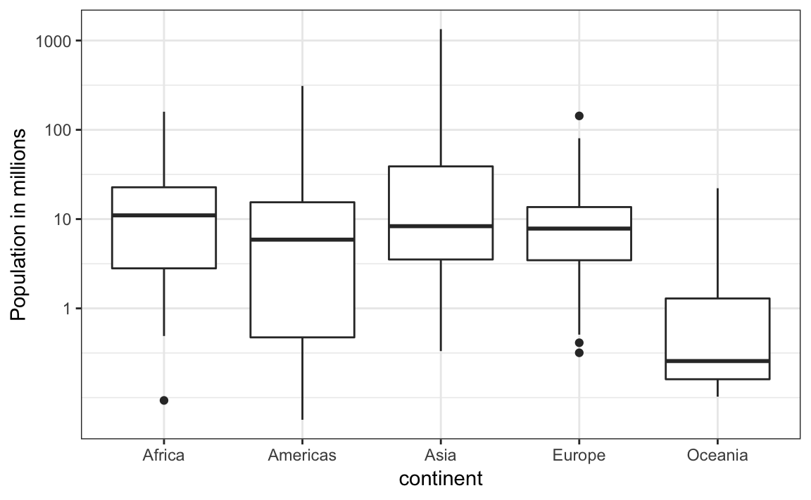
Which continent has the country with the biggest population size ?
What continent has the largest median population size?
What is median population size for Africa to the nearest million?
What proportion of countries in Europe have populations below 14 million?
A. 0.99 B. 0.75 C. 0.50 D. 0.25
If we use a log transformation, which continent shown above has the largest interquartile range ?
2.3 Distributions
You may have noticed that numerical data is often summarized with the average value. For example, the quality of a high school is sometimes summarized with one number: the average score on a standardized test. Occasionally, a second number is reported: the standard deviation. So, for example, you might read a report stating that scores were 680 plus or minus 50 (the standard deviation). The report has summarized an entire vector of scores with with just two numbers. Is this appropriate? Is there any important piece of information that we are missing by only looking at this summary rather than the entire list?
Our first data visualization building block is learning to summarize lists of factors or numeric vectors. The most basic statistical summary of a list of objects or numbers is its distribution. Once a vector has been summarized as distribution, there are several data visualization techniques to effectively relay this information.
2.3.1 Case study: student heights
Here we introduce a new motivating problem. It is an artificial one, but it will help us illustrate the concepts needed to understand distributions.
Pretend that we have to describe the heights of our classmates to ET, an extraterrestrial that has never seen humans. As a first step we need to collect data. To do this we ask students to report their heights in inches. We ask them to provide sex information because we know there are two different distributions. We collect the data and save it in a data frame:
library(dslabs)
data(heights)
head(heights)
#> sex height
#> 1 Male 75
#> 2 Male 70
#> 3 Male 68
#> 4 Male 74
#> 5 Male 61
#> 6 Female 65One way to convey the heights to ET is to simply send him this list of 1050 heights. But there are much more effective ways to convey this information and understanding the concept of a distribution will help. To simplify the explanation, at first we focus on male heights.
2.3.2 Distribution function
It turns that, in some cases, the average and the standard deviation are pretty much all we need to understand the data. We will learn data visualization techniques that will help us determine when this two number summary is appropriate. These same techniques will serve as an alternative for when two numbers is not enough.
The most basic statistical summary of a list of objects or numbers is its distribution. The simplest way to think of a distribution is as a compact description of a list with many entries. This concept should not be new for most of you. For example, with categorical data, the distribution simply describes the proportion of each unique category. The sex represented in the heights dataset is:
#>
#> Female Male
#> 0.227 0.773This two category frequency table is the simplest form of a distribution. We don’t really need to visualize it since one number describes everything we need to know 23% are females and the rest are males. When there are more categories, then a simple barplot describes the distribution. Here is an example with the US state regions:

Figure 2.4: Distribution of regions acorss the 50 states and D.C.
This particular plot is simply showing us four numbers: one for each category. We usually use barplots to display a few numbers. Although, this particular plot, a graphical representation of a frequency table, does not provide much more insight than a table itself, it is a first example of how we convert a vector into a plot that succinctly summarizes all the information in the vector. Once the data is numerical, the task of displaying distributions is more challenging.
2.3.3 Cumulative distribution functions
Numerical data, that are not categorical, also have distributions. In general, when data is not categorical, reporting the frequency of each entry is not an effective summary since most entries are unique. For example, while several students reported a height of 68 inches, only one student reported a height of 68.503937007874 inches and only one student reported a height 68.8976377952756 inches. We assume that they converted from 174 and 175 centimeters respectively.
Statistics textbooks teach us that a more useful way to define a distribution for numeric data is to define a function that reports the proportion of the data below \(a\) for all possible values of \(a\). This function is called the cumulative distribution function (CDF). In Statistics the following notation is used:
\[ F(a) = \mbox{Pr}(x \leq a) \]
Here is a plot of \(F\) for the height data:

Figure 2.5: Empirical cummulative distribution function for male height.
Like the frequency table does for categorical data, the CDF defines the distribution for numerical data. From the plot we can see, for example, that 34% of the values are below 65, since \(F(66)=\) 0.164, or that 90% of the values are below 72, since \(F(72)=\) 0.841, etc.. In fact, we can report the proportion of values between any two heights, say \(a\) and \(b\), by computing \(F(b) - F(a)\). This means that if we send this plot above to ET, he will have all the information needed to reconstruct the entire list. Paraphrasing the expression “a picture is worth a thousands word”, in this case a picture is as informative as 812 numbers.
A final note: because CDFs can be defined mathematically, as opposed to using data as we do here, the word empirical is added to distinguish and we use the term empirical CDF (ECDF) instead.
2.3.4 Histograms
Although the CDF concept is widely discussed in statistics textbooks, the plot is actually not very popular in practice. The main reason is that it does not easily convey characteristics of interest such as: at what value is the distribution centered? Is the distribution symmetric? What ranges contain 95% of the values? Histograms are much preferred because they greatly facilitate answering such questions. Histograms sacrifice just a bit of information to produce plots that are much easier to interpret.
The simplest way to make a histograms is to divide the span of our data into non-overlapping bins of the same size. Then, for each bin, we count the number of values that fall in that interval. The histogram plots these counts as bars with the base of the bar defined by the intervals. Here is the histogram for the height data splitting the range of values into one inch intervals: \([49.5, 50.5], [51.5,52.5],(53.5,54.5],...,(82.5,83.5]\)

Figure 2.6: Histogrom of male heights.
Note that a histogram is similar to a barplot, but it differs in that the x-axis is numerical, not categorical.
If we send this plot to ET, he will immediately learn some important properties about our data. First, the range of the data is from 50 to 84 with the majority (more than 95%) between 63 and 75 inches. Second, the heights are close to symmetric around 69 inches. Also, by adding up counts, ET could obtain a very good approximation of the proportion of the data in any interval. Therefore, the histogram above is not only easy to interpret, but also provides almost all the information contained in the raw list of 812 heights with about 30 bin counts.
So what information do we lose? Note that all values in each interval are treated the same when computing bin heights. So, for example, the histogram does not distinguish between 64, 64.1, and 64.2 inches. Given that these differences are almost unnoticeable to the eye, the practical implications are negligible and we were able to summarize the data to just 23 numbers.
2.4 Smoothed density
Smooth density plots are aesthetically more appealing than histograms. Here is what a smooth density plot looks like for our heights data:

Figure 2.7: Smooth density of male heights.
In this plot, we no longer have sharp edges at the interval boundaries and many of the local peaks have been removed. Also, the scale of the y-axis changed from counts to density.
To understand the smooth densities we have to understand estimates, a topic we don’t cover until a later chapter. However, we provide a heuristic explanation to help you understand the basics so you can use this useful data visualization tool.
The main new concept you must understand is that we assume that our list of observed values comes from a much much larger list of unobserved values. In the case of heights, you can imagine our list of 1050 students comes from a hypothetical list containing all the heights of all the students in all the world measured very precisely. Let’s say there are 1,000,000 of these. This list values, like any list of values, has a distribution and this is really what we want to report to ET since it is much more general. Unfortunately we don’t get to see it.
However, we make an assumption that helps us perhaps approximate it. Because we have 1,000,000 values, measured very precisely, we can make a histogram with very very small bins. The assumption is that if we do this, consecutive bins will be similar. This is what we mean by smooth: we don’t have big jumps. So here a hypothetical histogram with bins of size 1:

The smaller we make the bins, the smoother the histogram gets. Here are the histograms with bin width of 1, 0.5 and 0.1:
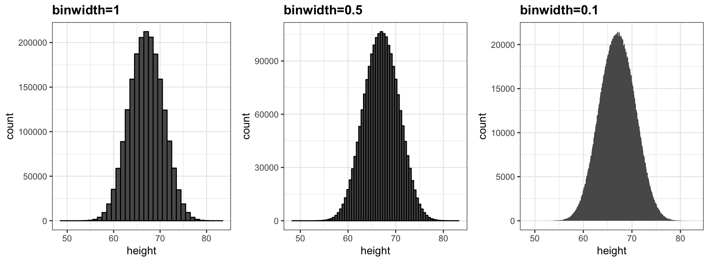
The smooth density is basically the curve that goes through the top of the histogram bars when the bins are very, very small. To make the curve not depend on the hypothetical size of the hypothetical list, we compute the curve on frequencies rather than counts
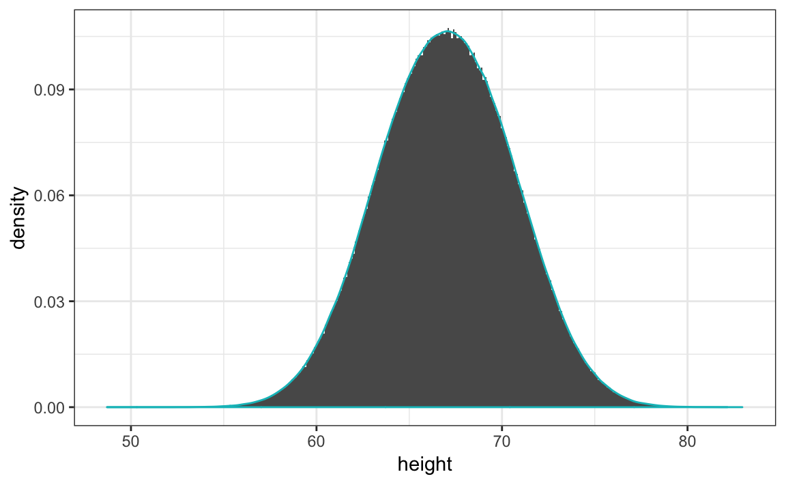
Now, back to reality. We don’t have millions of measurements, instead we have 812 and we can’t make a histogram with very small bins.
So instead we make a histogram, , using bin sizes appropriate for our data and computing frequencies rather than counts, and we draw a smooth curve that goes through the tops of the histogram bars:

Note that smooth is a relative term. We can actually control the smoothness of the curve that defines the smooth density through an option in the function that computes the smooth density. Here are two examples using different degrees of smoothness on the same histogram:
p1 <- heights %>%
filter(sex=="Male")%>% ggplot(aes(height)) +
geom_histogram(aes(y=..density..), binwidth = 1) +
geom_density(col="#00BFC4", adjust = 0.5)
p2 <- heights %>%
filter(sex=="Male") %>% ggplot(aes(height)) +
geom_histogram(aes(y=..density..), binwidth = 1) +
geom_density(col="#00BFC4", adjust = 2)
grid.arrange(p1,p2, ncol=2)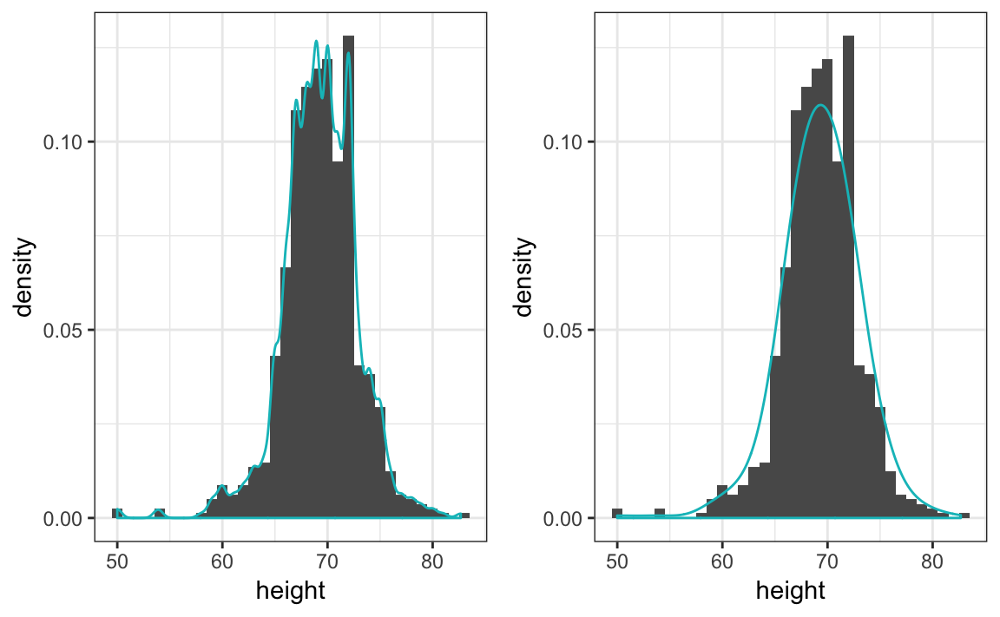
We need to make this choice with care as the resulting visualizations can change our interpretation of the data. We should select a degree of smoothness that we can defend as being representative of the underlying data. In the case of height, we really do have reason to believe that the proportion of people with similar heights should be the same. For example, the proportion that is 72 inches should be more similar to the proportion that is 71, than to the proportion that is 78 or 65. This implies that the curve should be pretty smooth; that is, more like the example on the right than on the left.
While the histogram is an assumption free summary, the smoothed density is based on some assumptions.
Interpreting the y-axis
Finally, we point out that interpreting the y-axis of a smooth density plot is not straightforward. It is scaled so that the area under the density curve adds up to 1. So if you imagine we form a bin with a base 1 unit in length, the y-axis value tells us the proportion of values in that bin. But this is only true for bins of size 1. For other sized intervals, the best way to determine the proportion of data in that interval is by computing the proportion of the total area contained in that interval. For example, here are the proportion of values between 65 and 68:

The proportion of this area is about 0.32 meaning that about that proportion is between 65 and 68 inches.
By understanding this we are ready to use the smooth density as a summary. For this dataset we would feel quite comfortable with the smoothness assumption and therefore with sharing this aesthetically pleasing figure with ET, which he could use to understand our male heights data:
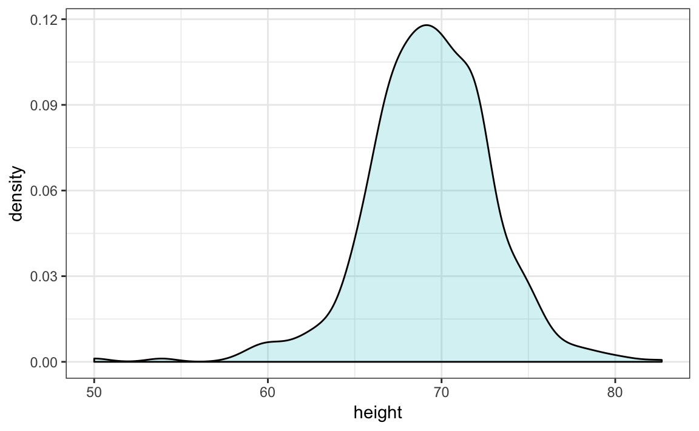
Densities permit stratification
As a final note, we point out that an advantage of smooth densities over histograms for visualization purposes is that densities makes it easier to compare two distributions. This is in large part because the jagged edges of the histogram add clutter. Here is an example comparing male and female heights:
heights %>%
ggplot(aes(height, fill=sex)) +
geom_density(alpha = 0.2)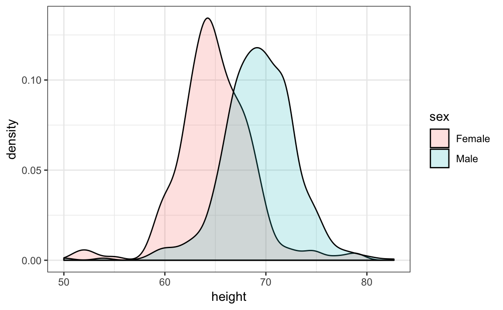
With the right argument, ggplot automatically shades the intersecting region with a different color.
Exercises
- In the murders dataset, the region is a categorical variable and the following is its distribution:

To the closet 5%, what proportion of the states are in the North Central region?Which of the following is true:
A. The graph above is a histogram. B. The graph above shows only four numbers with a bar plot. C. Categories are not numbers so it does not make sense to graph the distribution. D. The colors, not the height of the bars, describe the distribution.
The plot below shows the eCDF for male heights:

Based on the plot, what percentage of males are shorter than 75 inches?
A. 100% B. 95% C. 80% D. 72 inches
To the closest inch, what height
mhas the property that 1/2 of the male students are taller thanmand 1/2 are shorter?A. 61 inches B. 64 inches C. 69 inches D. 74 inches
Here is an eCDF of the murder rates across states:
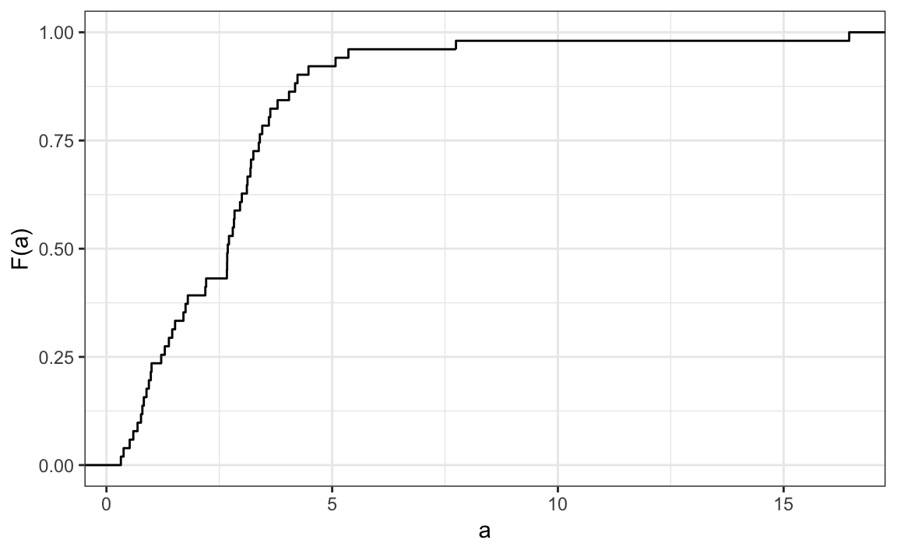
Knowing that there are 51 states (counting DC) and based on this plot, how many states have murder rates larger than 10 per 100,000 people?
A. 1 B. 5 C. 10 D. 50
Based on the eCDF above, which of the following statements are true:
A. About half the states have murder rates above 7 per 100,000 and the other half below. B. Most states have murder rates below 2 per 100,000. C. All the states have murder rates above 2 per 100,000. D. With the exception of 4 states, the murder rates are below 5 per 100,000.
Below is a histogram of male heights in our
heightsdataset: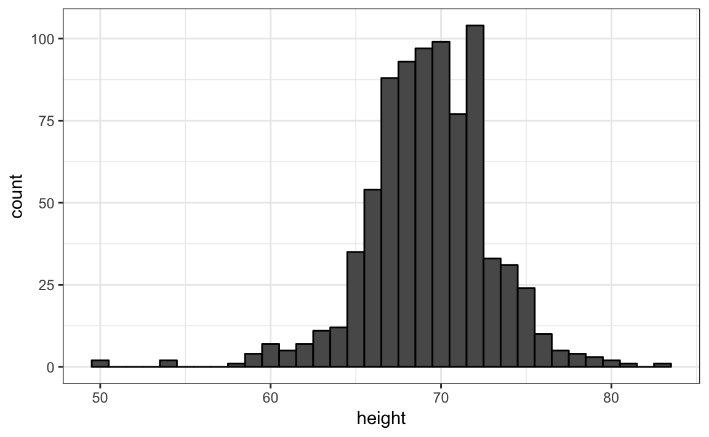
Based on this plot, how many males are between 63.5 and 65.5?
A. 10 B. 24 C. 34 D. 100
About what percentage are shorter than 60 inches?
A. 1% B. 10% C. 25% D. 50%
Based on the density plot below, about what proportion of US states have populations larger than 10 million?
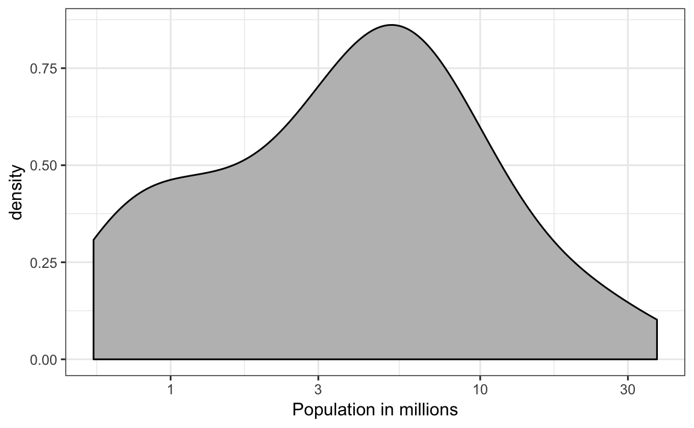
A. 0.02 B. 0.15 C. 0.50 D. 0.55
Below are three density plots. Is it possible that they are from the same dataset?

Which of the following statements is true:
A. It is impossible that they are from the same dataset. B. They are from the same dataset, but different due to code errors. C. They are the same dataset, but the first and second undersmooth and the third oversmooths. D. They are the same dataset, but the first is not in the log scale, the second undersmooths and the third oversmooths.
2.5 Normal Distribution
Histograms and density plots provide excellent summaries of a distribution. But can we summarize even further? We often see the average and standard deviation used as summary statistics: a two number summary! To understand what these summaries are and why they are so widely used, we need to understand the normal distribution.
The normal distribution, also known as the bell curve and as the Gaussian distribution, is one of the most famous mathematical concepts in history. A reason for this is that approximately normal distributions occur in many situations. Examples include gambling winnings, heights, weights, blood pressure, standardized test scores, and experimental measurement errors. There are explanations for this, but we describe these in a later chapter. Here we focus on how the normal distribution helps us summarize data.
Rather than using data, the normal distribution is defined with a mathematical formula. For any interval \((a,b)\) the proportion of values in that interval can be computed using this formula:
\[\mbox{Pr}(a < x < b) = \int_a^b \frac{1}{\sqrt{2\pi}s} \exp\left\{-\frac{1}{2}\left( \frac{x-m}{s} \right)^2\right\} \, dx\]
You don’t need to memorize or understand the details of the formula. But note that it is completely defined by just two parameters: \(m\) and \(s\). The rest of the symbols in the formula represent the interval ends that we determine, \(a\) and \(b\), and known mathematical constants \(\pi\) and \(\mathrm{e}\). These two parameters, \(m\) and \(s\), are referred to as the average, also called the mean, and the standard deviation (SD) of the distribution respectively.
The distribution is symmetric, centered at the average, and most values (about 95%) are within 2 SDs from the average. Here is what it looks like when the average is 0 and the SD is 1: 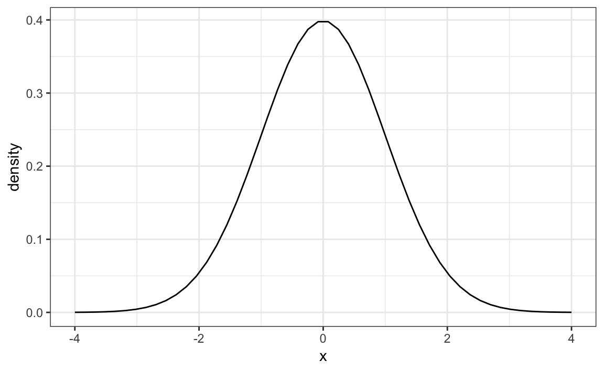
The fact that the distribution is defined by just two parameters implies that if a dataset is approximated by a normal distribution, all the information needed to describe the distribution can be encoded in just two numbers: the average and the standard deviation, which we now define for an arbitrary list of numbers.
For a list of numbers contained in a vector x the average is defined as
average <- sum(x) / length(x)and the SD is defined as
SD <- sqrt( sum( (x-mu)^2) / length(x))which can be interpreted as the average distance between values and their average.
Let’s compute the values for the height for males which we will store in the object \(x\):
index <- heights$sex=="Male"
x <- heights$height[index]The pre-built functions mean and sd [Footnote: SD divide by n-1] can be used here:
average <- mean(x)
SD <- sd(x)
c(average=average,SD=SD)
#> average SD
#> 69.31 3.61Here is a plot of the smooth density and the normal distribution with mean average = 69.315 and SD = 3.611
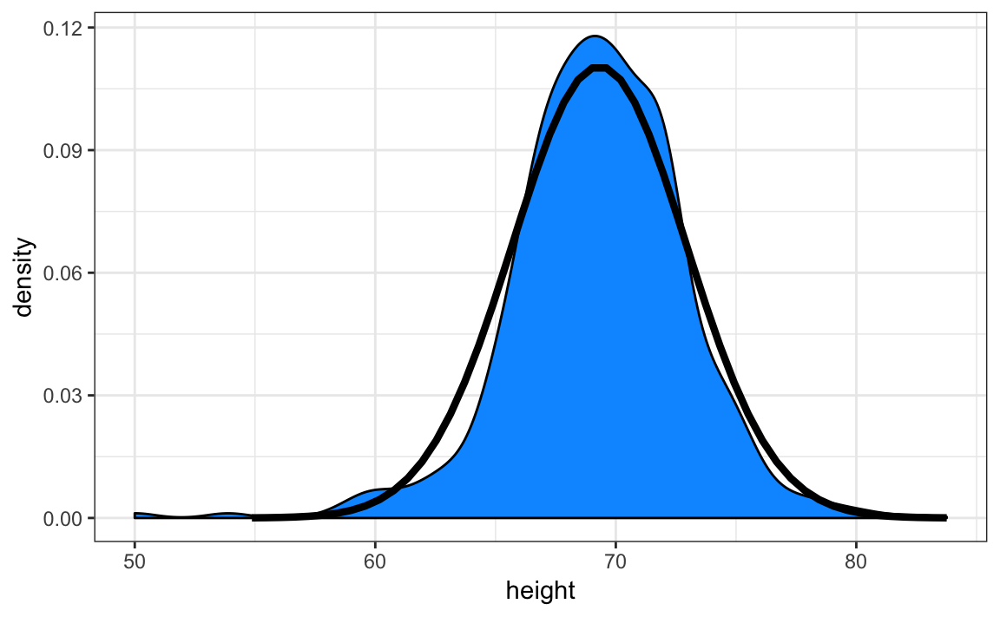
Notice that it does appear to be quite a good approximation. We now will see how well this approximation works at predicting proportion of values within intervals.
2.5.1 Standardized units
For data that is approximately normally distributed, it is convenient to think in terms of standard units. The standard unit of a value tells us how many standard deviations away from the average it is. Specifically, for a value \(x\) we define it as \(z = (x-\mbox{average})/\mbox{SD}\). If you look back at the formula for the normal distribution you notice that what is being exponentiated is \(- z^/2\). The maximum of \(\exp{-z^2/2}\) is when \(z=0\) which explains why the maximum of the distribution is at the mean. It also explains the symmetry since \(- z^/2\) is symmetric around 0.
If we convert the normally distributed data to standard units, we can quickly know if, for example, a person is about average (\(z=0\)), one of the largest (\(z=2\)), one of the smallest (\(z=-2\)) or an extremely rare occurrence (\(z>3\) or \(z < -3\)). Remember that it does not matter what the original units are, these rules apply to data that is approximately normal.
In R we can obtain standard units using the function scale:
z <- scale(x)Now to see how many men are within 2 SDs from the average we simply type:
mean(abs(z) < 2)
#> [1] 0.95The proportion is about 95% which is what the normal distribution predicts! To further confirm that in fact the approximation is a good one, we can use quantile-quantile plots.
2.5.2 Quantile-quantile QQ plots
A systematic way to assess how well the normal distribution fits the data is to check if the observed and predicted proportions match. In general, the approach of the QQ-plot is as follows:
- Define a series of proportions \(p=0.05,\dots .95\)
- For each \(p\) determine the value \(q\) so that the proportion of values in the data below \(q\) is \(p\). The \(q\)s are referred to as the quantiles.
To give a quick a example, for the male heights data we have that:
mean(x <= 69.5)
#> [1] 0.51550% are shorter or equal to 69 inches. This implies that if \(p=0.50\) then \(q=69.5\).
Now we define a series of \(p\)
p <- seq(0.05, 0.95, 0.05)If the quantiles for the data match the quantiles for the normal then it must be because the data follows a normal distribution.
To obtain the quantiles from the data we can use the quantile function like this:
observed_quantiles <- quantile(x, p)To obtain the theoretical normal distribution quantiles, with the corresponding average and SD, we use the qnorm function:
theoretical_quantiles <- qnorm( p, mean = mean(x), sd = sd(x))To see if they match or not, we plot them against each other and draw the identity line:
plot(theoretical_quantiles, observed_quantiles)
abline(0,1)
Notice that this code becomes much cleaner if we use standard units:
observed_quantiles <- quantile(z, p)
theoretical_quantiles <- qnorm(p)
plot(theoretical_quantiles, observed_quantiles)
abline(0,1)
2.5.3 Percentiles
Before we move on, let’s define some terms that are commonly used in exploratory data analysis.
Percentiles are special cases of quantiles that are commonly used. The percentiles are the quantiles you obtain when setting the \(p\) at \(0.01, 0.02, ..., 0.99\). We call, for example, the case of \(p=0.25\) the 25th percentile, which gives us a number for which 25% of the data is below. The most famous percentile is the 50th also known as the median.
For the normal distribution the median and average are the same, but this is generally not the case.
Another special case that receives a name are the quartiles which are obtained when setting \(p=0.25,0.50\), and \(0.75\).
Summarizing male heights with two numbers
Using the histogram, density plots and qq-plots, we have become convinced that the male height data is well approximated with a normal distribution. In this case, we report back to ET a very succinct summary: male heights follow a normal distribution with an average of 69.315 inches and a SD of 3.611 inches. With this information ET will have everything he needs to know what to expect when he meets our male students.
Exercises
- Load the height data set and create a vector
xwith just the male heights:
library(dslabs)
data(heights)
x <- heights$height[heights$sex=="Male"]What proportion of the data is between 69 and 72 inches (taller than 69 but shorter or equal to 72)? Hint: a logical operator and mean.
Suppose all you know about the data is the average and the standard deviation. Use the normal approximation to estimate the proportion you just calculated. Hint: Start by computing the average and standard deviation. Then use the
pnormfunction to predict the proportions.Note the approximation calculated in question two is very close to the exact calculation in the first question. Now perform the same task for more extreme values. Compare the exact calculation and the normal approximation for the interval (79,81]. How many times bigger is the actual proportion than the approximation?
Approximate the distribution of adult men in the world as normally distributed with an average of 69 inches and a standard deviation of 3 inches. Using this approximation, estimate the proportion of adult men that are 7 foot tall or taller, referred to as seven footers. Hint: use the
pnormfunction.There are about 1 billion men between the ages of 18 and 40 in the world. Use your answer to the previous question to estimate how many these men (18-40 yearl olds) are seven feet tall or taller in the world?
There are about 10 National Basketball Association (NBA) players that are 7 feet tall or higher. Using the answer to the previous two questions, what proportion of the world’s 18 to 40 year old seven footers are in the NBA?
Repeat the calculations performed in the previous question for Lebron James’ height: 6 feet 8 inches. There are about 150 players that are that tall.
In answering the previos questions, we found that it is not at all rare for a seven footer to become an NBA player. What would be a fair critique of our calculations:
A. Practice and talent are what make a great basketball player, not height. B. The normal approximation is not appropriate for heights. C. As seen in question 3, the normal approximation tends to underestimate the extreme values. It’s possible that there are more seven footers than we predicted. D. As seen in question 3, the normal approximation tends to overestimate the extreme values. It’s possible that there are less seven footers than we predicted.
2.6 Boxplots
To introduce boxplots we will go back to the US murder data. Suppose we want to summarize the murder rate distribution. Using the data visualization technique we have learned, we can quickly see that the normal approximation does not apply here:
Figure 2.8: Histogram and qqplot of US states murder rates.
In this case, the histogram, or a smooth density plot, would serve as a relatively succinct summary.
Now, suppose those used to receiving just two numbers as summaries ask us for a more compact summary.
Here Tukey offered some advice. Provide a five number summary composed of the range along with the quartiles (the 25th, 50th, and 75th percentiles). Tukey further suggested that we ignore outliers when computing the range and instead plot these as independent points. We provide a detailed explanation of outliers later in the chapter. Finally, he suggested we plot these numbers as a “box” with “whiskers”" like this:

with the box defined by the 25% and 75% percentile and the whiskers showing the range. The distance between these two are called the interquartile range. The two points are outliers according to Tukey’s definition. The median is shown with a horizontal line. Today, we call these boxplots.
From just this simple plot we know that the median is about 2.5, that the distribution is not symmetric, and that the range is 0 to 5 for the great majority of states with two exceptions.
Boxplots are even more useful when we want to quickly compare two or more distributions. For example, here are the heights for men and women:
heights %>% ggplot(aes(x=sex, y=height, fill=sex)) +
geom_boxplot()
The plot immediately reveals that males are, on average, taller than females. The standard deviations appear to be similar.
2.7 Case study: are female student heights normally distributed?
We have to give ET a full summary of our heights, but we have not yet summarized female heights. We expect that they will follow a normal distribution, just like males. However, exploratory plots reveal that the approximation is not as useful:
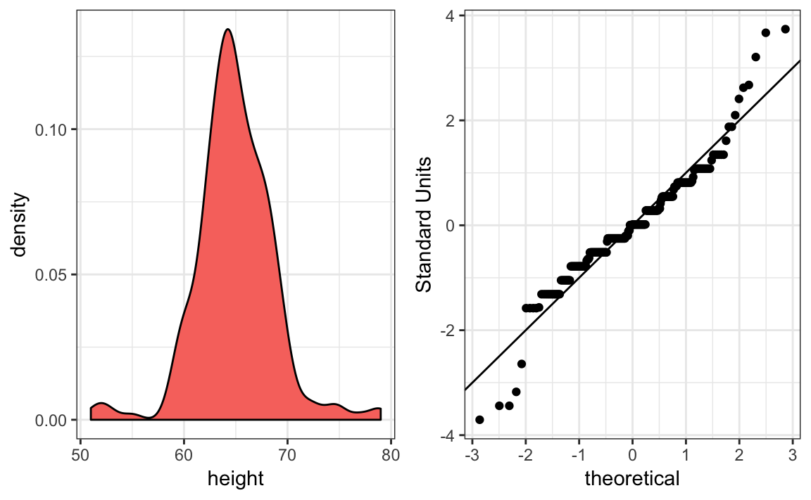
We see something we did not see for the males: the density plot has a second “bump”.Also, the qqplot shows that the highest points, tend to be taller than expected by the normal distribution. Finally, we also see five points in the qqplot that suggest shorter than expected heights for a normal distribution.
When reporting back to ET we might need to provide a histogram rather than just the average and standard deviation for the female heights.
However, go back and read Tukey’s quote. We have noticed what we didn’t expect to see. If we look at other female height distributions, we do find that they are well approximated with a normal distribution. So why are our female students different? Is our class a requirement for the female basketball team? Are small proportions of females claiming to be taller than they are? Another, perhaps more likely, explanation is that in the form students used to enter their heights, FEMALE was the default sex and some males entered their heights, but forgot to change the sex variable. In any case, data visualization has helped discover a potential flaw in our data.
Regarding the five smallest values, note that these values are:
heights %>% filter(sex=="Female") %>% top_n(5, desc(height)) %>% .$height
#> [1] 51 53 55 52 52Because these are reported heihgts, a possibility is that the student meant to enter 5’1“, 5’2”, 5’3" or 5’5“.
2.8 Robust summaries
2.8.1 Outliers
We previously described how boxplots show outliers, but we did not provide a precise definition. Here we discuss outliers, approaches that can help detect them, and summaries that take into account their presence.
Outliers are very common in data science. Data recording can be complex and it is common to observe data points generated in error. For example, an old monitoring device may read out nonsensical measurements before completely failing. Human error is also a source of outliers, in particular when data entry is done manually. For instance, an individual may mistakenly enter their height in centimeters instead of inches.
Now, how do we distinguish an outlier from measurements that were too big or too small simply due to expected variability? This is not always an easy question to answer, but we try to provide some guidance. Let’s begin with a simple case.
Suppose a colleague is charged with collecting demography data for a group of males. The data is stored in the object:
#> num [1:500] 5.59 5.8 5.54 6.15 5.83 5.54 5.87 5.93 5.89 5.67 ...Our colleague uses the fact that heights are usually well approximated by a normal distribution and summarizes the data with average and standard deviation:
mean(outlier_example)
#> [1] 6.1
sd(outlier_example)
#> [1] 7.8and writes a report on the interesting fact that this group of males is much taller than usual. The average height is over six feet tall! Using your data science skills, however, you notice something else that is unexpected: the standard deviation is over 7 inches. Adding and subtracting two standard deviations, you note that 95% of this population will have heights between -9.489, 21.697 inches which does not make sense.
A quick plot reveals the problem:
hist(outlier_example)
There appears to be at least one value that is nonsensical, since we know that a height of 180 feet is impossible. The boxplot detects this point as an outlier:
boxplot(outlier_example)
2.8.2 Median
When we have an outlier like this, the average can become very large. Keep in mind that mathematically we can make the average as large as we want by simply changing one number: with 500 data points, we can increase the average by any amount \(\Delta\) by adding \(\Delta \times\) 500 to a single number. The median, defined as the value for which half the values are smaller and the other half are bigger, is robust to such outliers. No matter how large we make the largest point, the median remains the same.
With this data the median is:
median(outlier_example)
#> [1] 5.74which is about 5 feet and 9 inches.
The median is what boxplots display as a horizontal line.
2.8.3 The inter quartile range
The box in boxplots are defined by the first and third quartile. These are meant to provide an idea of the variability in the data: 50% of the data is within this range. The difference between the 3rd and 1st quartile (or 75th and 25th percentiles) is referred to as the inter quartile range (IQR). As is the case with the median, this quantity will be robust to outliers as large values do not affect it. We can do some math to see that for normal data the IQR / 1.349 approximates the standard deviation of the data had an outlier not been present. We can see that this works well in our example since we get a standard deviation estimate of:
IQR(outlier_example) / 1.349
#> [1] 0.245which is about 3 inches.
2.8.4 Tukey’s definition of an outlier
In R, points falling outside the whiskers of the boxplot are referred to as outliers. This definition of outlier was introduced by Tukey. The top whisker ends at the 75th percentile plus 1.5 \(\times\) IQR. Similarly the bottom whisker ends at the 25th percentile minus 1.5\(\times\) IQR. If we define the first and third quartiles as \(Q_1\) and \(Q_3\) respectively, then an outlier is anything outside the range:
\[[Q_1 - 1.5 \times (Q_3 - Q1), Q_3 + 1.5 \times (Q_3 - Q1)]\].
When the data is normally distributed. the standard units of these values are:
q3 <- qnorm(0.75)
q1 <- qnorm(0.25)
iqr <- q3 - q1
r <- c(q1 - 1.5*iqr, q3 + 1.5*iqr)
r
#> [1] -2.7 2.7Using the pnorm function we see that 99.3% of the data falls in this interval.
Keep in mind that this is not such an extreme event: if we have 1000 data points that are randomly distributed, we expect to see about 7 outside of this range. But these would not be outliers since we expect to see them under the typical variation.
If we want an outlier to be rarer, we can increase the 1.5 to a larger number. Tukey also used 3 and called these far out outliers. With a normal distribution 100% of the data falls in this interval. This translates into about 1 in a million chance of being outside the range. In the geom_boxplot function this can be controlled by the outlier.size argument, which defaults to 1.5.
The 180 feet measurement is well beyond the range of the height data:
max_height <- quantile(outlier_example, 0.75) + 3*IQR(outlier_example)If we take this value out, we can see that the data is in fact normally distributed as expected:
x <- outlier_example[outlier_example < max_height]
qqnorm(x)
qqline(x)
2.8.5 Median absolute deviation
Another way to estimate the standard deviation in the presence of outliers is to use the median absolute deviation (MAD). To compute the MAD, we first compute the median, and then for each value we compute the distance between that value and the median. The MAD is defined as the median of these distances. For technical reasons not discussed here, this quantity needs to be multiplied by 1.4826 to assure it approximates the actual standard deviation. The mad function already incorporates this correction. For the height data we get a MAD of:
mad(outlier_example)
#> [1] 0.237which is about 3 inches.
Exercises
Load the height data set and create a vector x with just the male heights used in Galton’s data on the heights of parents and their children from his historic research on heredity.
##You can install data like this install.packages("HistData")
library(HistData)
data(Galton)
x <- Galton$childCompute the average and median of these data.
Compute the median and median absolute deviation of these data.
Now suppose Galton made a mistake when entering the first value, forgetting to use the decimal point. You can imitate this error by typing:
x_with_error <- x
x_with_error[1] <- x_with_error[1]*10How many inches does the average grow after this mistake?How many inches does the SD grow after this mistake?
How many inches does the median grow after this mistake?
How many inches does the MAD grow after this mistake?
How could you use exploratory data analysis to detect that an error was made?
A. Since it is only one value out of many, we will not be able to detect this. B. We would see an obvious shift in the distribution. C. A boxplot, histogram, or qq-plot would reveal a clear outlier. D. A scatter plot would show high levels of measurement error.
- How much can the average accidentally grow with mistakes like this? Write a function called
error_avgthat takes a valuekand returns the average of the vectorxafter the first entry changed tok. Show the results fork=10000andk=-10000.
2.9 Case Study: self-reported heights
data(reported_heights)
str(reported_heights)
#> 'data.frame': 1095 obs. of 3 variables:
#> $ time_stamp: chr "2014-09-02 13:40:36" "2014-09-02 13:46:59" "2014-09-02 13:59:20" "2014-09-02 14:51:53" ...
#> $ sex : chr "Male" "Male" "Male" "Male" ...
#> $ height : chr "75" "70" "68" "74" ...Height is a character vector so we create a new column with the numeric version:
reported_heights <- reported_heights %>%
mutate(original_heights = height, height = as.numeric(height))We get a warning about NAs. This is because some of the self reported heights were not numbers. We can see why we get these:
reported_heights %>%
filter(is.na(height)) %>%
head()
#> time_stamp sex height original_heights
#> 1 2014-09-02 15:16:28 Male NA 5' 4"
#> 2 2014-09-02 15:16:37 Female NA 165cm
#> 3 2014-09-02 15:16:52 Male NA 5'7
#> 4 2014-09-02 15:16:56 Male NA >9000
#> 5 2014-09-02 15:16:56 Male NA 5'7"
#> 6 2014-09-02 15:17:09 Female NA 5'3"Some students self reported their heights using feet and inches rather than just inches. Others used centimeters and others were just trolling. For now we will remove these entries:
reported_heights <- filter(reported_heights, !is.na(height))If we compute the average and standard deviation, we notice that we obtain strange results. The average and standard deviation are different from the median and MAS:
reported_heights %>%
group_by(sex) %>%
summarize(average = mean(height), sd = sd(height),
median = median(height), MAD = mad(height))
#> # A tibble: 2 x 5
#> sex average sd median MAD
#> <chr> <dbl> <dbl> <dbl> <dbl>
#> 1 Female 63.4 27.9 64.2 4.05
#> 2 Male 103.4 529.9 70.0 4.45This suggests that we have outliers, which is confirmed by simply creating a boxplot:
reported_heights %>%
ggplot(aes(sex, height)) +
geom_boxplot()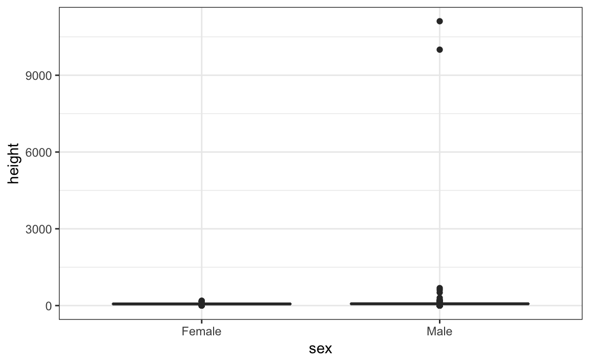
We can see some rather extreme values. To see what these values are, we can quickly look at the largest values using the arrange function:
reported_heights %>%
arrange(desc(height)) %>%
top_n(10, height)
#> time_stamp sex height original_heights
#> 1 2014-09-03 23:55:37 Male 11111 11111
#> 2 2016-04-10 22:45:49 Male 10000 10000
#> 3 2015-08-10 03:10:01 Male 684 684
#> 4 2015-02-27 18:05:06 Male 612 612
#> 5 2014-09-02 15:16:41 Male 511 511
#> 6 2014-09-07 20:53:43 Male 300 300
#> 7 2014-11-28 12:18:40 Male 214 214
#> 8 2017-04-03 16:16:57 Male 210 210
#> 9 2015-11-24 10:39:45 Male 192 192
#> 10 2014-12-26 10:00:12 Male 190 190
#> 11 2016-11-06 10:21:02 Female 190 190The first seven entries look like strange errors. However, the next few look like they were entered as centimeters instead of inches. Since 184 cm is equivalent to six feet tall, we suspect that 184 was actually meant to be 72 inches.
We can review all the nonsensical answers by looking at the data considered to be far out by Tukey:
max_height <- quantile(reported_heights$height, .75) + 3*IQR(reported_heights$height)
min_height <- quantile(reported_heights$height, .25) - 3*IQR(reported_heights$height)
c(min_height, max_height )
#> 25% 75%
#> 44 93outliers <- reported_heights %>%
filter(!between(height, min_height, max_height)) %>%
arrange(height)
outliers$height
#> [1] 0.00 0.70 1.00 1.00 1.00 1.60 1.70
#> [8] 2.00 5.00 5.00 5.00 5.00 5.10 5.10
#> [15] 5.10 5.10 5.11 5.11 5.11 5.11 5.20
#> [22] 5.20 5.20 5.25 5.25 5.30 5.40 5.40
#> [29] 5.50 5.50 5.50 5.50 5.50 5.50 5.50
#> [36] 5.50 5.50 5.50 5.50 5.51 5.57 5.60
#> [43] 5.60 5.60 5.60 5.60 5.60 5.60 5.69
#> [50] 5.70 5.70 5.70 5.70 5.70 5.70 5.70
#> [57] 5.75 5.80 5.80 5.80 5.80 5.80 5.90
#> [64] 5.90 5.90 5.90 6.00 6.00 6.00 6.00
#> [71] 6.00 6.00 6.00 6.00 6.00 6.00 6.00
#> [78] 6.00 6.00 6.00 6.00 6.00 6.00 6.00
#> [85] 6.00 6.10 6.10 6.20 6.20 6.30 6.50
#> [92] 6.50 6.50 6.70 7.00 12.00 19.00 22.00
#> [99] 23.00 25.00 34.00 34.00 100.00 103.20 111.00
#> [106] 120.00 120.00 150.00 150.00 152.00 157.00 157.00
#> [113] 158.00 158.00 158.00 159.00 160.00 160.00 161.00
#> [120] 162.00 162.00 162.00 163.00 164.00 164.00 165.00
#> [127] 165.00 165.00 167.00 167.00 167.00 168.00 168.00
#> [134] 168.00 168.00 169.00 169.00 169.00 169.00 170.00
#> [141] 170.00 170.00 170.00 170.00 170.00 170.00 170.00
#> [148] 170.00 172.00 172.00 172.00 172.00 172.00 172.00
#> [155] 172.00 173.00 173.00 173.00 174.00 174.00 174.00
#> [162] 174.00 175.00 175.00 175.00 175.00 175.00 176.00
#> [169] 176.00 177.00 178.00 178.00 178.00 178.00 178.00
#> [176] 179.00 180.00 180.00 180.00 180.00 180.00 180.00
#> [183] 180.00 180.00 180.00 182.00 183.00 183.00 183.00
#> [190] 184.00 184.00 184.00 185.00 185.00 186.00 190.00
#> [197] 190.00 192.00 210.00 214.00 300.00 511.00 612.00
#> [204] 684.00 10000.00 11111.00Examining these heights we see two common mistakes: entries in centimeters, which turn out to be too large, and entries of the form x.y with x and y representing feet and inches respectively. Some of the even smaller values, such as 1.6, could be entries in meters.
In the Data Wrangling Chapter, we will learn techniques for correcting these values and converting them into inches. Here we were able to detect this problem using careful data exploration to uncover issues with the data: the first step in the great majority of data science projects.
2.10 Summarizing data with dplyr
An important part of exploratory data analysis is summarizing data. We learned about the average and standard deviation as a two summary statistic that provides all the necessary information to summarize data that is normally distributed. We also learned that better summaries can be achieved by splitting data into groups before using the normal approximation. For example, in our heights dataset we described the height of men and women separately. In this section we cover two new dplyr verbs that make these computations easier: summarize and group_by. We learn to access resulting values using what we call the dot placeholder. Finally, we also learn to use arrange which helps us examine data after sorting.
2.10.1 Summarize
The summarize function in dplyr provides a way to compute summary statistics with intuitive and readable code. We start with a simple example based on heights:
library(dslabs)
data(heights)that computes the average and standard deviation for males:
s <- heights %>%
filter(sex == "Male") %>%
summarize(average = mean(height), standard_deviation = sd(height))
s
#> average standard_deviation
#> 1 69.3 3.61This takes our original data table as input, filters it to keep only males and then produces a new, summarized table with just the average and the standard deviation of heights. We get to choose the names of the columns of the resulting table. For example, above we decided to use average and standard_deviation, but we could have used other names just the same.
Because the resulting table, stored in s, is a data frame, we can access the components with the accessor $, which in this case will be a numeric:
s$average
#> [1] 69.3
s$standard_deviation
#> [1] 3.61As with most other dplyr functions, summarize is aware of the variable names and we can use them directly. So when inside the call to the summarize function we write mean(height), it is accessing the column with the name, and then computing the average of the respective numeric vector. We can compute any other summary that operates on vectors and returns a single value. For example, we can add the median, min and max like this:
heights %>%
filter(sex == "Male") %>%
summarize(median = median(height), minimum = min(height), maximum = max(height))
#> median minimum maximum
#> 1 69 50 82.7We can obtain these three values with just one line using the quantiles function. For example, quantile(x, c(0,0.5,1)) returns the min, median, and max of the vector x. However, if we attempt to use a function that returns two or more values:
heights %>%
filter(sex == "Male") %>%
summarize(range = quantile(height, c(0, 0.5, 1)))we will receive an error: Error: expecting result of length one, got : 2. With the function summarize we can only call functions that return a single value. In a later chapter, we will learn how to deal with functions that return more than one value.
For another example of how we can use the summarize function, let’s compute the average murder rate for the United States. Remember our data table includes total murders and population size for each state and we have already used dplyr to add a murder rate column:
data(murders)
murders <- murders %>% mutate(murder_rate = total/population*100000)Remember that the US murder is not the average of the state murder rates:
summarize(murders, mean(murder_rate))
#> mean(murder_rate)
#> 1 2.78This is because in the computation above the small states are given the same weight as the large ones. The US murder rate is the totalUS murders divided by the total US population. So the correct computation is:
us_murder_rate <- murders %>% summarize(rate = sum(total) / sum(population) * 100000)
us_murder_rate
#> rate
#> 1 3.03This computation counts larger states proportionally to their size which results in a larger value.
2.10.2 Using the dot to access the piped data
The us_murder_rate object defined above represents just one number. Yet we are storing it in a data frame:
class(us_murder_rate)
#> [1] "data.frame"since, as most dplyr functions, summarize always returns a data frame.
This might be problematic if we want to use the result with functions that require a numeric value. Here we show a useful trick for accessing values stored in data piped via %>%: when a data object is piped it can be accessed using the dot .. To understand what we mean take a look at this line of code:
us_murder_rate %>% .$rate
#> [1] 3.03This returns the value in the rate column of us_murder_rate making it equivalent to us_murder_rate$rate. To understand this line, you just need to think of . as a placeholder for the data that is being passed through the pipe. Because this data object is a data frame, we can access its columns with the $.
To get a number from the original data table with one line of code we can type:
us_murder_rate <- murders %>%
summarize(rate = sum(total) / sum(population) * 100000) %>%
.$rate
us_murder_rate
#> [1] 3.03which is now a numeric:
class(us_murder_rate)
#> [1] "numeric"We will see other instances in which using the . is useful. For now, we will only use it to produce numeric vectors from pipelines constructed with dplyr.
2.10.3 Group then summarize
A common operation in data exploration is to first split data into groups and then compute summaries for each group. For example, we may want to compute the average and standard deviation for men’s and women’s heights separately. The group_by function helps us do this.
If we type this:
heights %>% group_by(sex)
#> # A tibble: 1,050 x 2
#> # Groups: sex [2]
#> sex height
#> <fctr> <dbl>
#> 1 Male 75
#> 2 Male 70
#> 3 Male 68
#> 4 Male 74
#> 5 Male 61
#> 6 Female 65
#> # ... with 1,044 more rowsthe result does not look very different from heights, except we see this Groups: sex [2] when we print the object. Although not immediately obvious from its appearance, this is now a special data frame called a grouped data frame and dplyr functions, in particular summarize, will behave differently when acting on this object. Conceptually you can think of this table as many tables, with the same columns but not necessarily the same number of rows, stacked together in one object. When we summarize the data after grouping, this is what happens:
heights %>%
group_by(sex) %>%
summarize(average = mean(height), standard_deviation = sd(height))
#> # A tibble: 2 x 3
#> sex average standard_deviation
#> <fctr> <dbl> <dbl>
#> 1 Female 64.9 3.76
#> 2 Male 69.3 3.61The summarize function applies the summarization to each group separately.
For another example, let’s compute the median murder rate in the four regions of the country:
murders %>%
group_by(region) %>%
summarize(median_rate = median(murder_rate))
#> # A tibble: 4 x 2
#> region median_rate
#> <fctr> <dbl>
#> 1 Northeast 1.80
#> 2 South 3.40
#> 3 North Central 1.97
#> 4 West 1.292.10.4 Sorting data tables
When examining a dataset it is often convenient to sort the table by the different columns. We know about the order and sort function, but for ordering entire tables, the dplyr function arrange is useful. For example, here we order the states by population size when we type:
murders %>% arrange(population) %>% head()
#> state abb region population total murder_rate
#> 1 Wyoming WY West 563626 5 0.887
#> 2 District of Columbia DC South 601723 99 16.453
#> 3 Vermont VT Northeast 625741 2 0.320
#> 4 North Dakota ND North Central 672591 4 0.595
#> 5 Alaska AK West 710231 19 2.675
#> 6 South Dakota SD North Central 814180 8 0.983We get to decide which column to sort by. To see the states by population, from smallest to largest, we arrange by murder_rate instead:
murders %>%
arrange(murder_rate) %>%
head()
#> state abb region population total murder_rate
#> 1 Vermont VT Northeast 625741 2 0.320
#> 2 New Hampshire NH Northeast 1316470 5 0.380
#> 3 Hawaii HI West 1360301 7 0.515
#> 4 North Dakota ND North Central 672591 4 0.595
#> 5 Iowa IA North Central 3046355 21 0.689
#> 6 Idaho ID West 1567582 12 0.766Note that the default behavior is to order in ascending order. In dplyr, the function desc transforms a vector so that it is in descending order. To sort the table in descending order we can type:
murders %>%
arrange(desc(murder_rate)) %>%
head()
#> state abb region population total murder_rate
#> 1 District of Columbia DC South 601723 99 16.45
#> 2 Louisiana LA South 4533372 351 7.74
#> 3 Missouri MO North Central 5988927 321 5.36
#> 4 Maryland MD South 5773552 293 5.07
#> 5 South Carolina SC South 4625364 207 4.48
#> 6 Delaware DE South 897934 38 4.23Nested sorting
If we are ordering by a column with ties, we can use a second column to break the tie. Similarly, a third column can be used to break ties between first and second and so on. Here we order by region then, within region, we order by murder rate:
murders %>%
arrange(region, murder_rate) %>%
head()
#> state abb region population total murder_rate
#> 1 Vermont VT Northeast 625741 2 0.320
#> 2 New Hampshire NH Northeast 1316470 5 0.380
#> 3 Maine ME Northeast 1328361 11 0.828
#> 4 Rhode Island RI Northeast 1052567 16 1.520
#> 5 Massachusetts MA Northeast 6547629 118 1.802
#> 6 New York NY Northeast 19378102 517 2.6682.10.4.1 The top \(n\)
In the code above we have used the function head to avoid having the page fill up with the entire dataset. If we want to see a larger proportion, we can use the top_n function. Here are the first 10 rows:
murders %>% top_n(10, murder_rate)
#> state abb region population total murder_rate
#> 1 Arizona AZ West 6392017 232 3.63
#> 2 Delaware DE South 897934 38 4.23
#> 3 District of Columbia DC South 601723 99 16.45
#> 4 Georgia GA South 9920000 376 3.79
#> 5 Louisiana LA South 4533372 351 7.74
#> 6 Maryland MD South 5773552 293 5.07
#> 7 Michigan MI North Central 9883640 413 4.18
#> 8 Mississippi MS South 2967297 120 4.04
#> 9 Missouri MO North Central 5988927 321 5.36
#> 10 South Carolina SC South 4625364 207 4.48top_n picks the highest n based on the column given as a second argument. However, the rows are not sorted.
If the second argument is left blank, then it returns the first n columns. This means that to see the 10 states with the highest murder rates we can type:
murders %>%
arrange(desc(murder_rate)) %>%
top_n(10)
#> Selecting by murder_rate
#> state abb region population total murder_rate
#> 1 District of Columbia DC South 601723 99 16.45
#> 2 Louisiana LA South 4533372 351 7.74
#> 3 Missouri MO North Central 5988927 321 5.36
#> 4 Maryland MD South 5773552 293 5.07
#> 5 South Carolina SC South 4625364 207 4.48
#> 6 Delaware DE South 897934 38 4.23
#> 7 Michigan MI North Central 9883640 413 4.18
#> 8 Mississippi MS South 2967297 120 4.04
#> 9 Georgia GA South 9920000 376 3.79
#> 10 Arizona AZ West 6392017 232 3.63Exercises
For these exercesis we will be using the data from the survey collected by the United States National Center for Health Statistics (NCHS). This center has conducted a series of health and nutrition surveys since the 1960’s. Starting in 1999 about 5,000 individuals of all ages have been interviewed every year and they complete the health examination component of the survey. Part of the data is made avaialble via the NHANES package which can install using
install.packages("NHANES")Once you install it you can load the data this way:
library(NHANES)
data(NHANES)The NHANES data has many missing values. Remember that the main summarization function in R will return NA if any of the entries of the input vector is an NA. Here is an example:
library(dslabs)
data(na_example)
mean(na_example)
#> [1] NA
sd(na_example)
#> [1] NATo ignore the NAs we can use the na.rm argument:
mean(na_example, na.rm=TRUE)
#> [1] 2.3
sd(na_example, na.rm=TRUE)
#> [1] 1.22Let’s now explore the NHANES data.
We will provide some basic facts about blood pressure. First let’s select a group to set the standard. We will use 20-29 year old females. Note that the category is coded with
20-29, with a space in front! TheAgeDecadeis a categorical variable with these ages. What is the average and standard deviation of systolic blood pressure, as saved in theBPSysAvevariable? Save it to a variable calledref. Hint: Usefilterandsummarizeand use thena.rm=TRUEargument when computing the average and standard deviation. You can also filter the NA values usingfilter.Using only one line of code, assign the average to a numeric variable
ref_avg. Hint: Use the code similar to above and then the dot.Now report the min and max values for the same group.
Now compute the average and standard deviation for females, but for each age group separately. Note that the age groups are defined by
AgeDecade. Hint: rather than filtering by age, filter byGenderand then usegroup_by.Now do the same for males.
We can actually combine both these summaries into one line of code. This is because
group_bypermits us to group by more than one variable. Obtain one big summary table usinggroup_by(AgeDecade, Gender).For males between the ages of 40-49, compare systolic blood pressure across race as reported in the
Race1variable. Order the resulting table from lowest to highest average systolic blood pressure.
2.11 A first introduction to ggplot2
We have now described several data visualization techniques and are ready to learn how to create them in R. Throughout the book we will be using the ggplot2 package. We can load it, along with dplyr, as part of the tidyverse:
Many other approaches are available for creating plots in R. In fact, the plotting capabilities that come with a basic installation of R are already quite powerful. We have seen examples of these already with the functions plot, hist and boxplot. There are also other packages for creating graphics such as grid and lattice. We chose to use ggplot2 in this book because it breaks plots into components in a way that permits beginners to create relatively complex and aesthetically pleasing plots using syntax that is intuitive and relatively easy to remember.
One reason ggplot2 is generally more intuitive for beginners is that it uses a grammar of graphics, the gg in ggplot2. This is analogous to the way learning grammar can help a beginner construct hundreds of different sentences by learning just a handful of verbs, nouns and adjectives without having to memorize each specific sentence. Similarly, by learning a handful of ggplot2 building blocks and its grammar, you will be able to create hundreds of different plots.
Another reason ggplot2 makes it easier for beginners is that its default behavior is carefully chosen to satisfy the great majority of cases and is aesthetically pleasing. As a result, it is possible to create informative and elegant graphs with relatively simple and readable code.
One limitation is that ggplot2 is designed to work exclusively with data tables in which rows are observations and columns are variables. However, a substantial percentage of datasets that beginners work with are, or can be converted into, this format. An advantage of this approach is that, assuming that our data follows this format, it simplifies the code and learning the grammar.
2.11.1 The cheat sheet
To use ggplot2 you will have to learn several functions and arguments. These are hard to memorize so we highly recommend you have the a ggplot2 sheet cheat handy. You can get a copy here: https://www.rstudio.com/wp-content/uploads/2015/03/ggplot2-cheatsheet.pdf or simply perform a ninternet search for “ggplot2 cheat sheet”.
2.11.2 The components of a graph
We construct a graph that summarizes the US murders dataset:

Figure 2.9: Muder totals versus population size for US states.
We can clearly see how much states vary across population size and the total number of murders. Not surprisingly, we also see a clear relationship between murder totals and population size. A state falling on the dashed grey line has the same murder rate as the US average. The four geographic regions are denoted with color which depicts how most southern states have murder rates above the average.
This data visualization shows us pretty much all the information in the data table. The code needed to make this plot is relatively simple. We will learn to create the plot part by part.
2.11.3 The components of a graph
The first step in learning ggplot2 is to be able to break a graph apart into components. Let’s break down the plot above and introduce some of the ggplot2 terminology. The main three components to note are:
- Data: The US murders data table is being summarized. We refer to this as the data component.
- Geometry: The plot above is a scatter plot. This is referred to as the geometry component. Other possible geometries are barplot, histograms, smooth densities, qqplots, and boxplots.
- Aesthetic mapping: The x-axis values are used to display population size, the y-axis values are used to display the total number of murders, text is used to identify the states, and colors are used to denote the four different regions. These are the aesthetic mappings component. How we define the mapping depends on what geometry we are using.
We also note that:
- The range of the x-axis and y-axis appears to be defined by the range of the data. They are both on log-scales. We refer to this as the scale component.
- There are labels, a title, a legend, and we use the style of The Economist magazine.
We will now construct the plot piece by piece. We start by loading the dataset:
library(dslabs)
data(murders)2.11.4 Creating a blank slate ggplot object
The first step in creating a ggplot2 graph is to define a ggplot object. We do this with the function ggplot which initializes the graph. If we read the help file for this function, we see that the first argument is used to specify what data is associated with this object:
ggplot(data = murders)We can also pipe the data. So this line of code is equivalent to the one above:
murders %>% ggplot()
It renders a plot, in this case a blank slate, since no geometry has been defined. The only style choice we see is a grey background.
What has happened above is that the object was created and because it was not assigned, it was automatically evaluated. But we can define an object, for example, like this:
p <- ggplot(data = murders)
class(p)
#> [1] "gg" "ggplot"To render the plot associated with this object we simply print the object p. The following two lines of code produce the same plot we see above:
print(p)
p2.11.5 Layers
In ggplot we create graphs by adding layers. Layers can define geometries, compute summary statistics, define what scales to use, or even change styles. To add layers, we use the the symbol +. In general a line of code will look like this:
DATA %>%
ggplot()+ LAYER 1 + LAYER 2 + … + LAYER N
Usually, the first added layer defines the geometry. We want to make a scatter plot. So what geometry do we use?
2.11.6 Geometry
Taking a quick look at the cheat sheet we see that the function used to create plots with this geometry is geom_point.


Geometry function names follow this pattern: geom and the name of the geometry connected by an underscore.
For geom_point to know what to do, we need to provide data and a mapping. We have already connected the object p with the murders data table and if we add as a layer geom_point, we will default to using this data. To find out what mapping are expected we read the Aesthetics section of the help file geom_point help file:
Aesthetics
geom_point understands the following aesthetics (required aesthetics are in bold):
x
y
alpha
colour
and, as expected, we see that at least two arguments are required x and y.
2.11.7 aes
aes will be one of the functions you will most use. This function connects data with what we see on the graph. We refer to this connect as the aesthetic mappings. The outcome of this function is often used as the argument of a geometry function. This example produces a scatter plot of total murders versus population in millions:
murders %>% ggplot() +
geom_point(aes(x = population/10^6, y = total))We can drop the x = and y = if we wanted to since these are the first and second expected arguments as seen in the help page.
We can also add a layer to the p object that has defined above as p <- ggplot(data = murders):
p + geom_point(aes(population/10^6, total))
The scale and labels are defined by default when adding this layer. We also use the variable names from the object component: population and total.
The behavior of recognizing the variables from the data component is quite specific to aes. With most functions, if you try to access the values of population or total outside of aes you receive an error.
2.11.8 Adding other layers
A second layer in the plot we wish to make involves adding a label to each point to identify the state. The geom_label and geom_text functions permit us to add text to the plot, without and with a rectangle behind the text respectively.
Because each state (each point) has a label, we need an aesthetic mapping to make the connection. By reading the help file, we learn that we supply the mapping between point and label through the label argument of aes. So the code looks like this:
p + geom_point(aes(population/10^6, total)) +
geom_text(aes(population/10^6, total, label = abb))
We have successfully added a second layer to the plot.
As an example of the unique behavior of aes mentioned above, note that this call:
p_test <- p + geom_text(aes(population/10^6, total, label = abb))is fine, whereas this call
p_test <- p + geom_text(aes(population/10^6, total), label = abb) will give you an error as abb is not found once it is outside of the aes function. The layer geom_text does not know where to find abb as it is not a global variable.
2.11.8.1 Tinkering with other arguments
Each geometry function has many arguments other than aes and data. They tend to be specific to the function. For example, in the plot we wish to make, the points are larger than the default ones. In the help file we see that size is an aesthetic and we can change it like this:
p + geom_point(aes(population/10^6, total), size = 3) +
geom_text(aes(population/10^6, total, label = abb))
size is not a mapping, it affects all the points so we do not need to include it inside aes.
Now that the points are larger, it is hard to see the labels. If we read the help file for geom_text, we see learn of the nudge_x argument which moves the text slightly to the right:
p + geom_point(aes(population/10^6, total), size = 3) +
geom_text(aes(population/10^6, total, label = abb), nudge_x = 1)
This is preferred as it makes it easier to read the text.
2.11.9 Global aesthetic mappings
In the previous line of code, we define the mapping aes(population/10^6, total) twice, once in each geometry. We can avoid this by using a glogbal aesthetic mapping. We can do this when we define the blank slate ggplot object. Remember that the function ggplot contains an argument that permits us to define aesthetic mappings:
args(ggplot)
#> function (data = NULL, mapping = aes(), ..., environment = parent.frame())
#> NULLIf we define a mapping in ggplot, then all the geometries that are added as layers will default to this mapping. We redefine p:
p <- murders %>% ggplot(aes(population/10^6, total, label = abb))and then we can simply use code as follows:
p + geom_point(size = 3) +
geom_text(nudge_x = 1.5)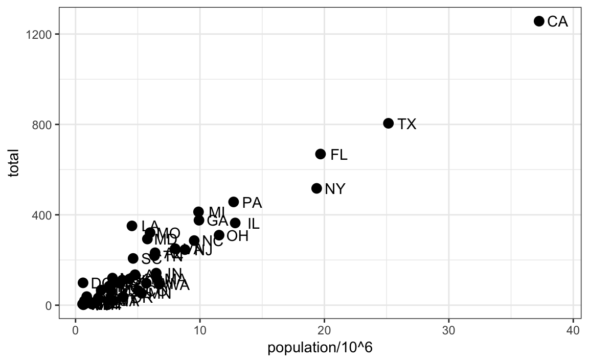
We keep the size and nudge_x argument in geom_point and geom_text respectively because we only want to increase the size of points and nudge only the labels. Also note that the geom_point function does not need a label argument and therefore ignores it.
2.11.9.1 Local aesthetic mappings override global ones
If necessary, we can override the global mapping by defining a new mapping within each layer. These local definitions override the global. Here is an example:
p + geom_point(size = 3) +
geom_text(aes(x = 10, y = 800, label = "Hello there!"))
Clearly, the second call to geom_text does not use the population and total.
2.11.10 Scales
First, our desired scales are in log-scale. This is not the default so this change needs to be added through a scales layer. A quick look at the cheat sheet reveals the scale_x_continuous lets us control the behavior of scales. We use them like this:
p + geom_point(size = 3) +
geom_text(nudge_x = 0.05) +
scale_x_continuous(trans = "log10") +
scale_y_continuous(trans = "log10") 
Because we are in the log-scale now, the nudge must be made smaller.
This particular transformation is so common that ggplot2 provides specialized functions:
p + geom_point(size = 3) +
geom_text(nudge_x = 0.05) +
scale_x_log10() +
scale_y_log10() 2.11.11 Labels and titles
Similarly, the cheat sheet quickly reveals that to change labels and add a title, we use the following functions:
p + geom_point(size = 3) +
geom_text(nudge_x = 0.05) +
scale_x_log10() +
scale_y_log10() +
xlab("Populations in millions (log scale)") +
ylab("Total number of murders (log scale)") +
ggtitle("US Gun Murders in US 2010")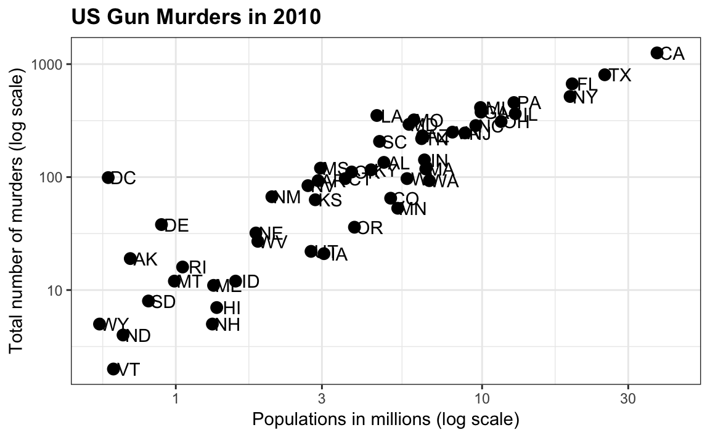
We are almost there! All we have left to do is add color, a legend and optional changes to the style.
2.11.11.1 Categories as colors
We can change the color of the points using the col argument in the geom_point function. To facilitate exposition, we will redefine p to be everything except the points layer:
p <- murders %>% ggplot(aes(population/10^6, total, label = abb)) +
geom_text(nudge_x = 0.05) +
scale_x_log10() +
scale_y_log10() +
xlab("Populations in millions (log scale)") +
ylab("Total number of murders (log scale)") +
ggtitle("US Gun Murders in US 2010")and then test out what happens by adding different calls to geom_point. We can make all the points blue by adding the color argument:
p + geom_point(size = 3, color ="blue")
This, of course, is not what we want. We want to assign color depending on the geographical region. A nice default behavior of ggplot2 is that if we assign a categorical variable to color, it automatically assigns a different color to each category. It also adds a legend!
To map each point to a color, we need to use aes since this is a mapping. We use the following code:
p + geom_point(aes(col=region), size = 3)
The x and y mappings are inherited from those already defined in p. So we do not redefine them. We also move aes to the first argument since that is where the mappings are expected in this call.
Here we see yet another useful default behavior: ggplot2 has automatically added a legend that maps color to region.
2.11.11.2 Adding a line
We want to add a line that represents the average murder rate for the entire country. Once we determine the per million rate to be \(r\), this line is defined by the formula: \(y = r x\) with \(y\) and \(x\) our axes: total murders and population in millions respectively. In the log-scale this line turns into: \(\log(y) = \log(r) + \log(x)\). So in our plot it’s a line with slope 1 and intercept \(\log(r)\). To compute this value we use what we our dplyr skills:
r <- murders %>%
summarize(rate = sum(total) / sum(population) * 10^6) %>% .$rateTo add a line we use the geom_abline function. ggplot2 uses ab in the name to remind us we are supplying the intercept (a) and slope (b). The default line has slope 1 and intercept 0 so we only have to define the intercept:
p + geom_point(aes(col=region), size = 3) +
geom_abline(intercept = log10(r))
We can change the line type and color of the lines using arguments. Also we draw it first so it doesn’t go over our points.
p <- p + geom_abline(intercept = log10(r), lty = 2, color = "darkgrey") +
geom_point(aes(col=region), size = 3) Note that we redefined p.
2.11.12 Adjustments
The default plots created by ggplot2 are already very useful. However, we frequently need to make minor tweaks to the default behavior. Although it is not always obvious how to make these even with the cheat sheet, ggplot2 is very flexible.
For example, we can make changes to the legend via the scale_color_discrete function. In our plot the word region is capitalized and we can change it like this:
p <- p + scale_color_discrete(name = "Region") 2.11.13 Add-on packages
The power of ggplot2 is augmented further due to the availability of add-on packages. The remaining changes needed to put the finishing touches on our plot require the ggthemes and ggrepel packages.
The style of a ggplot2 graph can be changed using the theme functions. Several themes are included as part of the ggplot2 package. In fact, for most of the plots in this book, we use a function in the dslabs package that automatically sets a default theme:
ds_theme_set()Many other themes are added by the package ggthemes. Among those are the theme_economist theme that we used. After installing the package, you can change the style by adding a layer like this:
library(ggthemes)
p + theme_economist()You can see how some of the other themes look by simply changing the function. For instance, you might try the theme_fivethirtyeight() theme instead.
The final difference has to do with the position of the labels. In our plot, some of the labels fall on top of each other. The add-on package ggrepel includes a geometry that adds labels while ensuring that they don’t fall on top of each other. We simply change geom_text with geom_text_repell.
2.11.14 Putting it all together
Now that we are done testing, we can write one piece of code that produces our desired plot from scratch.
library(ggthemes)
library(ggrepel)
### First define the slope of the line
r <- murders %>%
summarize(rate = sum(total) / sum(population) * 10^6) %>% .$rate
## Now make the plot
murders %>% ggplot(aes(population/10^6, total, label = abb)) +
geom_abline(intercept = log10(r), lty = 2, color = "darkgrey") +
geom_point(aes(col=region), size = 3) +
geom_text_repel() +
scale_x_log10() +
scale_y_log10() +
xlab("Populations in millions (log scale)") +
ylab("Total number of murders (log scale)") +
ggtitle("US Gun Murders in US 2010") +
scale_color_discrete(name = "Region") +
theme_economist()
2.12 Geometries
Now let’s try to make the summary plots we have described in this chapter.
2.12.1 Histogram
Let’s start with the histogram. In a first step we need to use dplyr to filter the data:
heights %>% filter(sex=="Male")Once we have a dataset, the next step is deciding what geometry we need. If you guessed geom_histogram, you guessed correctly. Looking at the help file for this function we learn that the only required argument is x, the variable for which we will construct a histogram. The code looks like this:
p <- heights %>%
filter(sex=="Male") %>%
ggplot(aes(x = height))
p + geom_histogram()
#> `stat_bin()` using `bins = 30`. Pick better value with `binwidth`.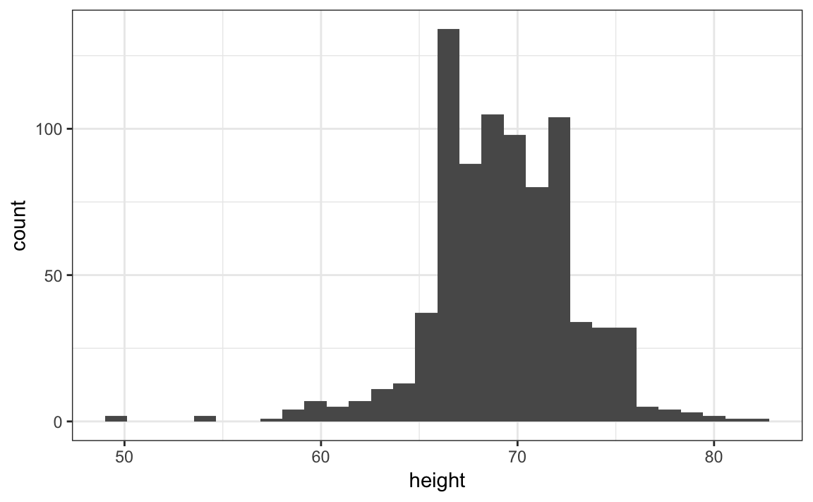
As before, we can drop the x =.
This call gives us a message:
stat_bin()usingbins = 30. Pick better value withbinwidth.
We previously used a bin size of 1 inch, so the code looks like this:
p + geom_histogram(binwidth = 1)Finally, if for aesthetic reasons we want to add color, we use the arguments described in the help file. We also add labels and a title:

2.12.2 Density
To create a smooth density, we need a different geometry: we used geom_density instead.
p + geom_density()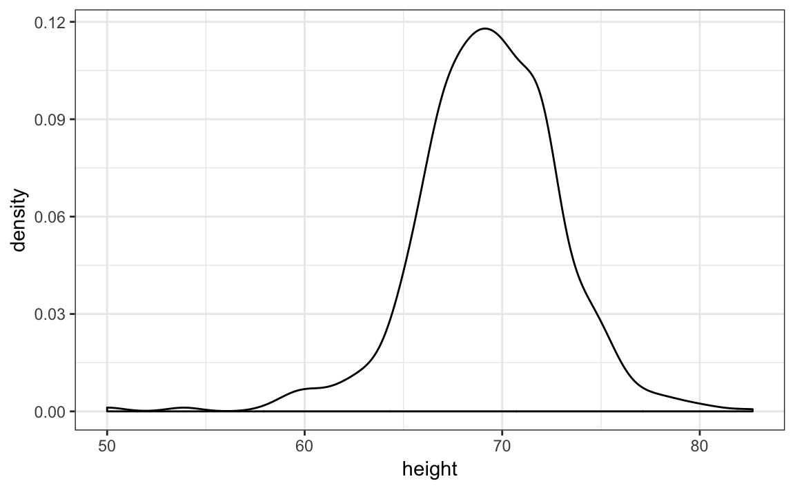
To fill in with color, we can use the fill argument.
p + geom_density(fill="blue")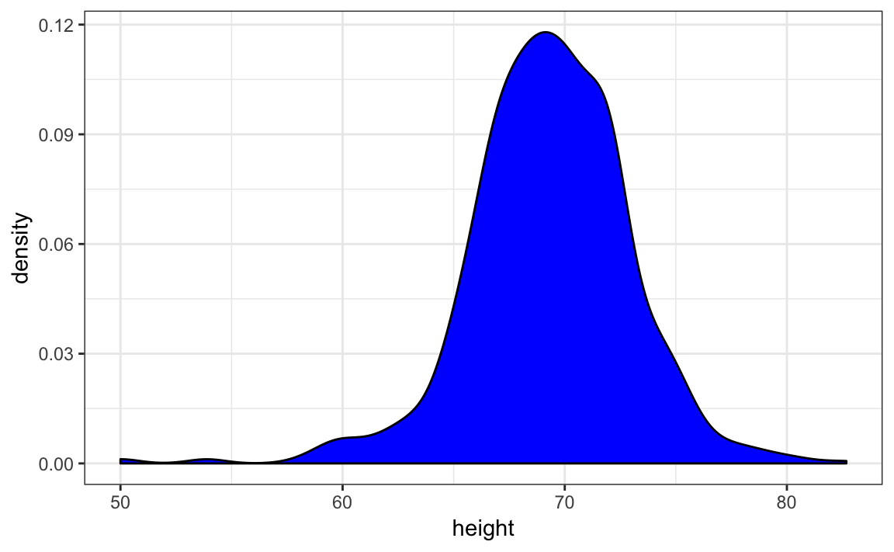
2.12.3 QQ-plots
For qq-plots we use the geom_qq geometry. From the help file, we learn that we need to specify the sample (we will learn about samples in a later chapter).
p <- heights %>% filter(sex=="Male") %>%
ggplot(aes(sample = height))
p + geom_qq()
By default the sample variable is compared to a normal distribution with average 0 and standard deviation 1. To change this, again from the help file, we use the dparams arguments.
params <- heights %>% filter(sex=="Male") %>%
summarize(mean = mean(height), sd = sd(height))
p + geom_qq(dparams = params)
Adding an identity line is as simple as assigning another layer. For straight lines, we use the geom_abline function. To help you remember the name of this function, remember that the ab in front of line serves to remind us that we need to supply an intercept (a) and slope (b) to draw the line \(y=a+bx\). The default is the identity a=0 and b=1
p + geom_qq(dparams = params) +
geom_abline()
Another option here is to scale the data first and the make a qqplot against the standard normal:
heights %>%
filter(sex=="Male") %>%
ggplot(aes(sample = scale(height))) +
geom_qq() +
geom_abline()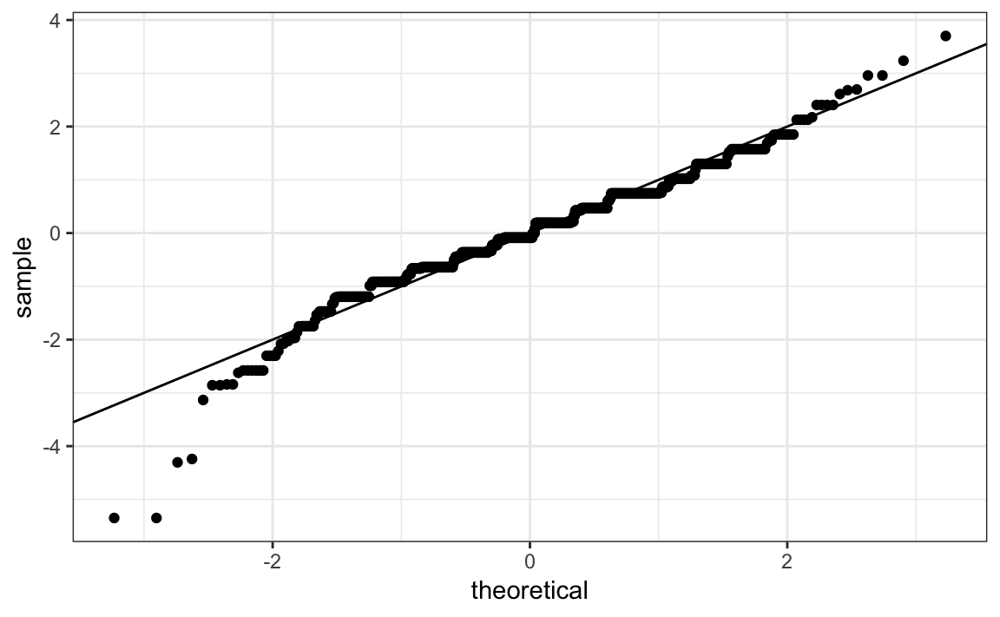
2.13 Grids of plots
There are often reasons to graph plots next to each other. The gridExtra package permits us to do that:
p <- heights %>% filter(sex=="Male") %>% ggplot(aes(x = height))
p1 <- p + geom_histogram(binwidth = 1, fill = "blue", col="black")
p2 <- p + geom_histogram(binwidth = 2, fill = "blue", col="black")
p3 <- p + geom_histogram(binwidth = 3, fill = "blue", col="black")To print them all side-by-side, we can use the function grid.arrange in the gridExtra package:
library(gridExtra)
grid.arrange(p1,p2,p3, ncol = 3)
2.14 Case study: Trends in world health and economics
In this section we will demonstrate how relatively simple ggplot2 code can create insightful and aesthetically pleasing plots that help us better understand trends in world health and economics. We later augment the code somewhat to perfect the plots and describe some general data visualization principles.
2.14.1 Example 1: Life expectancy and fertility rates
Hans Rosling was the co-founder of the Gapminder Foundation, an organization dedicated to educating the public by using data to dispel common myths about the so-called developing world. The organization uses data to show how actual trends in health and economics contradict the narratives that emanate from sensationalist media coverage of catastrophes, tragedies and other unfortunate events. As stated in the Gapminder Foundation’s website:
Journalists and lobbyists tell dramatic stories. That’s their job. They tell stories about extraordinary events and unusual people. The piles of dramatic stories pile up in peoples’ minds into an over-dramatic worldview and strong negative stress feelings: “The world is getting worse!”, “It’s we vs. them!” , “Other people are strange!”, “The population just keeps growing!” and “Nobody cares!”
Hans Rosling conveyed actual data-based trends in a dramatic way of his own, using effective data visualization. This section is based on two talks that exemplify this approach to education: New Insights on Poverty and The Best Stats You’ve Ever Seen. Specifically, in this section, we use data to attempt to answer the following two questions:
- Is it a fair characterization of today’s world to say it is divided into western rich nations and the developing world in Africa, Asia and Latin America?
- Has income inequality across countries worsened during the last 40 years?
To answer these question we will be using the gapminder dataset provided in dslabs. This dataset was created using a number of spreadsheets available from the Gapminder Foundation. You can access the table like this:
library(dslabs)
data(gapminder)
head(gapminder)
#> country year infant_mortality life_expectancy fertility
#> 1 Albania 1960 115.4 62.9 6.19
#> 2 Algeria 1960 148.2 47.5 7.65
#> 3 Angola 1960 208.0 36.0 7.32
#> 4 Antigua and Barbuda 1960 NA 63.0 4.43
#> 5 Argentina 1960 59.9 65.4 3.11
#> 6 Armenia 1960 NA 66.9 4.55
#> population gdp continent region
#> 1 1636054 NA Europe Southern Europe
#> 2 11124892 1.38e+10 Africa Northern Africa
#> 3 5270844 NA Africa Middle Africa
#> 4 54681 NA Americas Caribbean
#> 5 20619075 1.08e+11 Americas South America
#> 6 1867396 NA Asia Western AsiaHans Rosling’s quiz
As done in the New Insights on Poverty video, we start by testing our knowledge regarding differences in child mortality across different countries.
For each of the six pairs of countries below, which country do you think had the highest child mortality in 2015? Which pairs do you think are most similar?
- Sri Lanka or Turkey
- Poland or South Korea
- Malaysia or Russia
- Pakistan or Vietnam
- Thailand or South Africa
When answering these questions without data, the non-European countries are typically picked as having higher child mortality rates: Sri Lanka over Turkey, South Korea over Poland, and Malaysia over Russia. It is also common to assume that countries considered to be part of the developing world: Pakistan, Vietnam, Thailand and South Africa, have similarly high mortality rates.
To answer these questions with data we can use dplyr. For example, for the first comparison we see that:
library(tidyverse)
gapminder %>%
filter(year == 2015 & country %in% c("Sri Lanka","Turkey")) %>%
select(country, infant_mortality)
#> country infant_mortality
#> 1 Sri Lanka 8.4
#> 2 Turkey 11.6Turkey has the higher rate.
We can use this code on all comparisons and find the following:
| country | infant_mortality | country1 | infant_mortality1 |
|---|---|---|---|
| Sri Lanka | 8.4 | Turkey | 11.6 |
| Poland | 4.5 | South Korea | 2.9 |
| Malaysia | 6.0 | Russia | 8.2 |
| Pakistan | 65.8 | Vietnam | 17.3 |
| Thailand | 10.5 | South Africa | 33.6 |
We see that the European countries on this list have higher child mortality rates: Poland has a higher rate than South Korea, and Russia has a higher rate than Malaysia. We also see that Pakistan has a much higher rate than Vietnam, and South Africa has a much higher rate than Thailand. It turns out that most people do worse than if they were guessing, which implies that more than ignorant, we are misinformed.
2.14.2 A scatterplot
The reason for this stems from the preconceived notion that the world is divided into two groups: the western world (Western Europe and North America), characterized by long life spans and small families, versus the developing world (Africa, Asia, and Latin America) characterized by short life spans and and large families. But, does the data support this dichotomous view?
The necessary data to answer this question is also available in our gapminder table. Using our newly learned data visualization skills we will be able to tackle this challenge.
In order to analyze this world view, our first plot is a scatter plot of life expectancy versus fertility rates (average number of children per woman). We start by looking at data from about 50 years ago, when perhaps this view was first cemented in our minds.
filter(gapminder, year==1962) %>%
ggplot( aes(fertility, life_expectancy)) +
geom_point()
Most points fall into two distinct categories:
- Life expectancy around 70 years and 3 or less children per family
- Life expectancy lower then 65 years and more than 5 children per family.
To confirm that indeed these countries are from the regions we expect, we can use color to represent continent.
filter(gapminder, year==1962) %>%
ggplot( aes(fertility, life_expectancy, color = continent)) +
geom_point() 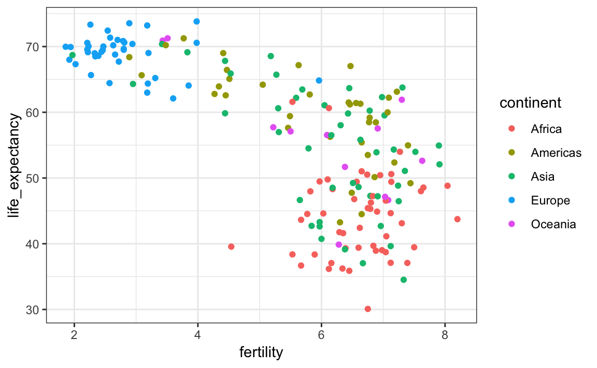
So in 1962, “the west versus developing world” view was grounded in some reality. But is this still the case 50 years later?
2.14.3 Faceting
We could easily plot the 2012 data in the same way we did for 1962. But to compare, side by side plots are preferable. In ggplot2 we can achieve this by faceting variables: we stratify the data by some variable and make the same plot for each strata.
To achieve faceting we add a layer with the function facet_grid, which automatically separates the plots. This function lets you facet by up to two variables using columns to represent one variable and rows to represent the other. The function expects the row and column variables to be separated by a ~. Here is an example of a scatter plot with facet_grid added as the last layer:
filter(gapminder, year%in%c(1962, 2012)) %>%
ggplot(aes(fertility, life_expectancy, col = continent)) +
geom_point() +
facet_grid(continent~year)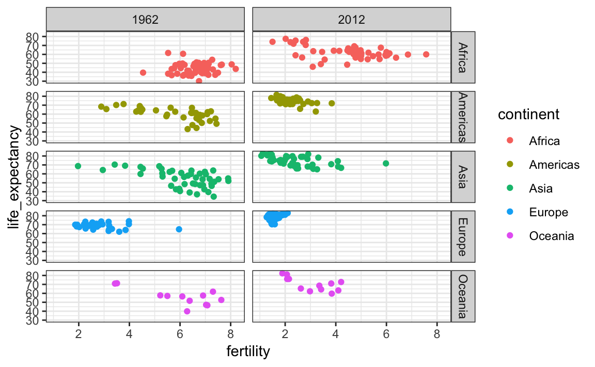
We see a plot for each continent/year pair. However, this is just an example and more than what we want, which is simply to compare 1962 and 2012. In this case, there is just one variable and we use . to let facet know that we are not using one of the variables:
filter(gapminder, year%in%c(1962, 2012)) %>%
ggplot(aes(fertility, life_expectancy, col = continent)) +
geom_point() +
facet_grid( . ~ year)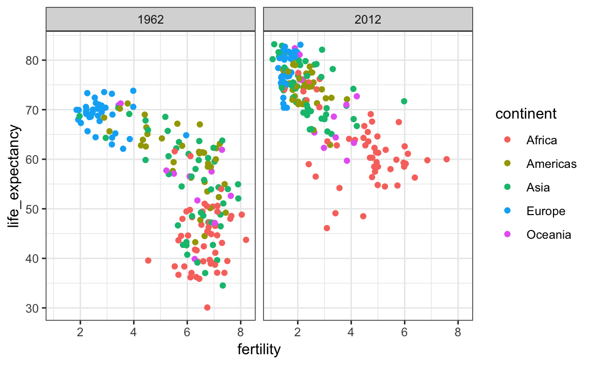
This plot clearly shows that the majority of countries have moved from the developing world cluster to the western world one. In 2012, the western versus developing world view no longer makes sense. This is particularly clear when comparing Europe to Asia, which includes several countries that have made great improvements.
2.14.3.1 facet_wrap
To explore how this transformation happened through the years, we can make the plot for several years. For example, we can add 1970, 1980, 1990, and 2000. If we do this, we will not want all the plots on the same row, the default behavior of facet_grid, since they will become too thin to show the data. Instead we will want to use multiple rows and columns. The function facet_wrap permits us to do this by automatically wrapping the series of plots so that each display has viewable dimensions:
years <- c(1962, 1980, 1990, 2000, 2012)
continents <- c("Europe", "Asia")
gapminder %>%
filter(year %in% years & continent %in% continents) %>%
ggplot( aes(fertility, life_expectancy, col = continent)) +
geom_point() +
facet_wrap(~year) 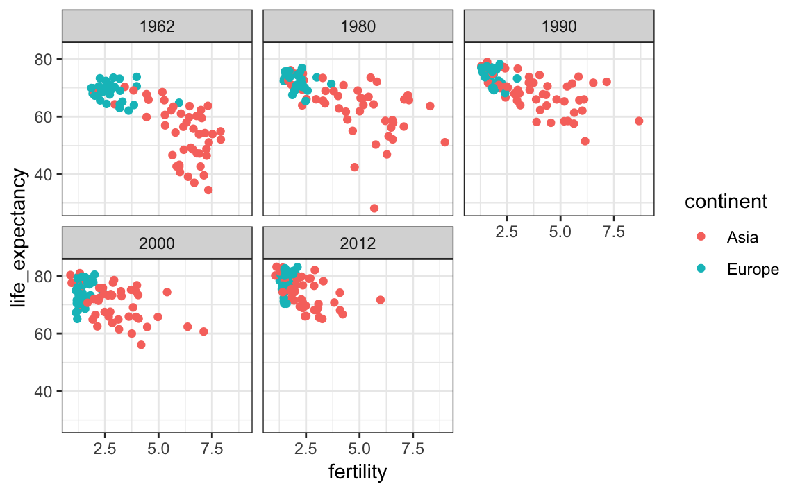
This plot clearly shows how most Asian countries have improved at a much faster rate than European ones.
2.14.4 Fixed scales for better comparisons
The default choice of the range of the axes is an important one. When not using facet, this range is determined by the data shown in the plot. When using facet, this range is determined by the data shown in all plots and therefore kept fixed across plots. This makes comparisons across plots much easier. For example, in the above plot we can see that life expectancy has increased and the fertility has decreased across most countries. We see this because the cloud of points moves. This is not the case if we adjust the scales:

In the plot above we have to pay special attention to the range to notice that the plot on the right has a larger life expectancy.
2.14.5 Time series plots
The visualizations above effectively illustrates that data no longer supports the western versus developing world view. Once we see these plots, new questions emerge. For example, which countries are improving more, which ones less? Was the improvement constant during the last 50 years or was it more accelerated during certain periods? For a closer look that may help answer these questions, we introduce time series plots.
Time series plots have time in the x-axis and an outcome or measurement of interest on the y-axis. For example, here is a trend plot of United States fertility rates:
gapminder %>%
filter(country == "United States") %>%
ggplot(aes(year,fertility)) +
geom_point()
We see that the trend is not linear at all. Instead there is sharp drop during the 60s and 70s to below 2. Then the trend comes back to 2 and stabilizes during the 90s.
When the points are regularly and densely spaced, as they are here, we create curves by joining the points with lines, to convey that these data are from a single country. To do this we use the geom_line function instead of geom_point.
gapminder %>%
filter(country == "United States") %>%
ggplot(aes(year,fertility)) +
geom_line()
This is particularly helpful when we look at two countries. If we subset the data to include two countries, one from Europe and one from Asia, then adapt the code above:
countries <- c("South Korea","Germany")
gapminder %>% filter(country %in% countries) %>%
ggplot(aes(year,fertility)) +
geom_line()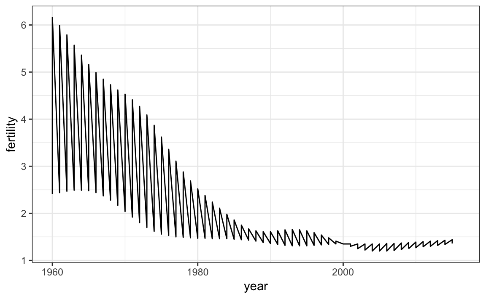
Unfortunately, this is not the plot that we want. Rather than a line for each country, the points for both countries are joined. This is actually expected since we have not told ggplot anything about wanting two separate lines. To let ggplot know that there are two curves that need to be made separately, we assign each point to a group, one for each country:
countries <- c("South Korea","Germany")
gapminder %>% filter(country %in% countries) %>%
ggplot(aes(year,fertility, group = country)) +
geom_line()
#> Warning: Removed 2 rows containing missing values (geom_path).
But which line goes with which country? We can assign colors to make this distinction. A useful side-effect of using the color argument to assign different colors to the different countries is that the data is automatically grouped:
countries <- c("South Korea","Germany")
gapminder %>% filter(country %in% countries) %>%
ggplot(aes(year,fertility, col = country)) +
geom_line()
#> Warning: Removed 2 rows containing missing values (geom_path).
The plot clearly shows how South Korea’s fertility rate dropped drastically during the 60s and 70s and by 1990 had a similar rate to that of Germany.
We prefer labels over legends
For trend plots we recommend labeling the lines rather than using legends since the viewer can quickly see which line is which country. This suggestion actually applies to most plots: labeling is usually preferred over legends.
We demonstrate how we can do this using the life expectancy data. We define a data table with the label locations and then use a second mapping just for these labels:
labels <- data.frame(country = countries, x = c(1975,1965), y = c(60,72))
gapminder %>%
filter(country %in% countries) %>%
ggplot(aes(year, life_expectancy, col = country)) +
geom_line() +
geom_text(data = labels, aes(x, y, label = country), size = 5) +
theme(legend.position = "none")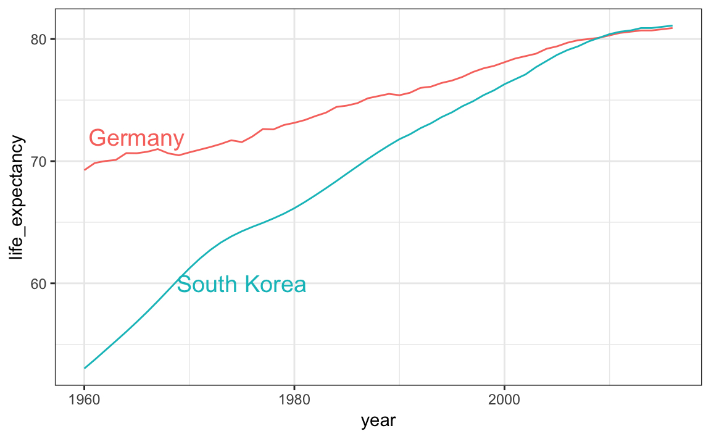
The plot clearly shows how an improvement in life expectancy followed the drops in fertility rates. In 1960 Germans lived 15 years longer than South Koreans, although by 2010 the gap is completely closed. It exemplifies the improvement that many non-western countries have achieved in the last 40 years.
2.14.6 Example 2: Income distribution
Another commonly held notion is that wealth distribution across the world has become worse during the last decades. When general audiences are asked if poor countries have become poorer and rich countries become richer, the majority answers yes. By using stratification, histograms, smooth densities, and boxplots, we will be able to understand if this is in fact the case. We will also learn how transformations can sometimes help provide more informative summaries and plots.
2.14.7 Transformations
The gapminder data table includes a column with the countries gross domestic product (GDP). GDP measures the market value of goods and services produced by a country in a year. The GDP per person is often used as a rough summary of a country’s wealth. Here we divide this quantity by 365 to obtain the more interpretable measure dollars per day. Using current US dollars as a unit, a person surviving on an income of less than $2 a day is defined to be living in absolute povery. We add this variable to the data table:
gapminder <- gapminder %>% mutate(dollars_per_day = gdp/population/365)The GDP values are adjusted for inflation and represent current US dollars, so these values are meant to be comparable across the years. Of course, these are country averages and within each country there is much variability. All the graphs and insights described below relate to country averages and not to individuals.
Country income distribution
Here is a histogram of per day incomes from 1970:
past_year <- 1970
gapminder %>%
filter(year == past_year & !is.na(gdp)) %>%
ggplot(aes(dollars_per_day)) +
geom_histogram(binwidth = 1, color = "black")
We use the color = "black" argument to draw a boundary and clearly distinguish the bins.
In this plot we see that for the majority of countries, averages are below $10 a day. However, the majority of the x-axis is dedicated to the 35 countries with averages above $10. So the plot is not very informative about countries with values below $10 a day.
It might be more informative to quickly be able to see how many countries have average daily incomes of about $1 (extremely poor), $2 (very poor), $4 (poor), $8 (middle), $16 (well off), $32 (rich), $64 (very rich) per day. These changes are multiplicative and log transformations convert multiplicative changes into additive ones: when using base 2, a doubling of a value turns into an increase by 1.
Here is the distribution if we apply a log base 2 transform:
gapminder %>%
filter(year == past_year & !is.na(gdp)) %>%
ggplot(aes(log2(dollars_per_day))) +
geom_histogram(binwidth = 1, color = "black")
In a way this provides a close up of the mid to lower income countries.
Which base?
In the case above we used base 2 in the log transformations. Other common choices are base \(\mathrm{e}\) (the natural log) and base 10.
In general, we do not recommend using the natural log for data exploration and visualization. This is because while \(2^2, 2^3, 2^4, \dots\) or \(10^1, 10^2, \dots\) are easy to compute in our heads, the same is not true for \(\mathrm{e}^2, \mathrm{e}^3, \dots\).
In the dollars per day example, we used base 2 instead of base 10 because the resulting range is easier to interpret. The range of the values being plotted is 0.327, 48.885.
In base 10 this turns into a range that includes very few integers: just 0 and 1. With base two, our range includes -2, -1, 0, 1, 2, 3, 4 and 5. It is easier to compute \(2^x\) and \(10^x\) when \(x\) is an integer and between -10 and 10, so we prefer to have smaller integers in the scale. Another consequence of a limited range is that choosing the binwidth is more challenging. With log base 2, we know that a binwidth of 1 will translate to a bin with range \(x\) to \(2x\).
For an example in which base 10 makes more sense consider population sizes. A log base 10 makes more sense since the range for these is:
filter(gapminder, year == past_year) %>%
summarize(min = min(population), max = max(population))
#> min max
#> 1 46075 8.09e+08Here is the histogram of the transformed values:
gapminder %>% filter(year == past_year) %>%
ggplot(aes(log10(population))) +
geom_histogram(binwidth = 0.5, color = "black")
In the above, we quickly see that country populations range between ten thousand and ten billion.
Transform the values or the scale?
There are two ways we can use log transformations in plots. We can log the values before plotting them or use log scales in the axes. Both approaches are useful and have different strengths. If we log the data, we can more easily interpret intermediate values in the scale. For example, if we see
—-1—-x—-2——–3—-
for log transformed data, we know that the value of \(x\) is about 1.5. If the scales are logged:
—-1—-x—-10——100—
then, to determine x, we need to compute \(10^{1.5}\), which is not easy to do in our heads. The advantage of using logged scales is that we see the original values on the axes. However, the advantage of showing logged scales is that the original values are displayed in the plot, which are easier to interpret. For example, we would see “32 dollars a day” instead of “5 log base 2 dollar a day”.
As we learned earlier, if we want to scale the axis with logs we can use the scale_x_ccontinuous function. So instead of logging the values first, we apply this layer:
gapminder %>%
filter(year == past_year & !is.na(gdp)) %>%
ggplot(aes(dollars_per_day)) +
geom_histogram(binwidth = 1, color = "black") +
scale_x_continuous(trans = "log2")
Note that the log base 10 transformation has it’s own function: scale_x_log10(), but currently base 2 does not. Although we could easily define our own.
There are other transformations available through the trans argument. As we learn later on, the square root (sqrt) transformation, for example, is useful when considering counts. The logistic transformation (logit) is useful when plotting proportions between 0 and 1. The reverse transformation is useful when we want smaller values to be on the right or on top.
2.14.8 Modes
In statistics these bumps are sometimes referred to as modes. The mode of a distribution is the value with the highest frequency. The mode of the normal distribution is the average. When a distribution, like the one above, doesn’t monotonically decrease from the mode, we call the locations where it goes up and down again local modes and say that the distribution has multiple modes.
The histogram above suggest that the 1970 country income distribution has two modes: one at about 2 dollars per day (1 in the log 2 scale) and another at about 32 dollars per day (5 in the log 2 scale). This bimodality is consistent with a dichotomous world made up of countries with average incomes less than $8 (3 in the log 2 scale) a day and countries above that.
2.14.9 Stratify and boxplot
The histogram showed us that the income distribution values show a dichotomy. However, the histogram does not show us if the two groups of countries are west versus the developing world.
To see distributions by geographical region, we first stratify the data into regions and then examine the distribution for each. Because of the number of regions
n_distinct(gapminder$region)
#> [1] 22looking at histograms or smooth densities for each will not be useful. Instead, we can stack boxplots next to each other:
p <- gapminder %>%
filter(year == past_year & !is.na(gdp)) %>%
ggplot(aes(region, dollars_per_day))
p + geom_boxplot() 
Now we can’t read the region names because the default gpplot2 behavior is to write the labels horizontally and, here, we run out of room. We can easily fix this by rotating the labels. Consulting the cheat sheet we find we can rotate the names by changing the theme through element_text. The hjust=1 justifies the text so that it is next to the axis.
p + geom_boxplot() +
theme(axis.text.x = element_text(angle = 90, hjust = 1))
We can already see that there is indeed a “west versus the rest”" dichotomy.
Do not order alphabetically
There are a few more adjustments we can make to this plot that help uncover this reality. First, it helps to order the regions in the boxplots from poor to rich rather than alphabetically. This can be achieved using the reorder function. This function lets us change the order of the levels of a factor variable based on a summary computed on a numeric vector. Remember that many graphing functions coerce character vectors into a factor. The default behavior resutls in alphabetically ordered levels:
fac <- factor(c("Asia", "Asia", "West", "West", "West"))
levels(fac)
#> [1] "Asia" "West"
value <- c(10, 11, 12, 6, 4)
fac <- reorder(fac, value, FUN = mean)
levels(fac)
#> [1] "West" "Asia"Second, we can use color to distinguish the different continents, a visual cue that helps find specific regions. Here is the code:
p <- gapminder %>%
filter(year == past_year & !is.na(gdp)) %>%
mutate(region = reorder(region, dollars_per_day, FUN = median)) %>%
ggplot(aes(region, dollars_per_day, fill = continent)) +
geom_boxplot() +
theme(axis.text.x = element_text(angle = 90, hjust = 1)) +
xlab("")
p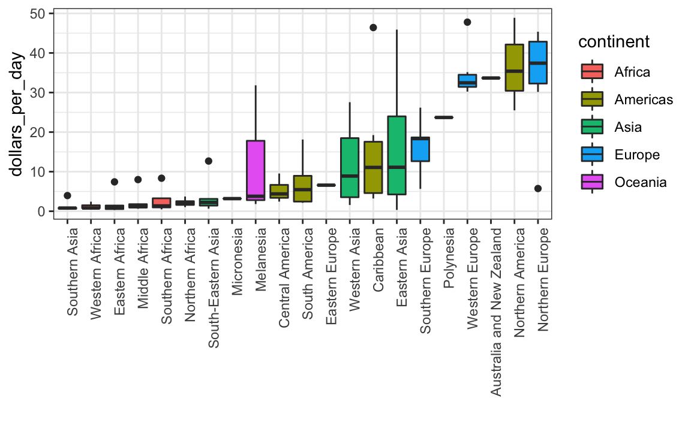
This plot shows two clear groups, with the rich group composed of North America, Northern and Western Europe, New Zealand and Australia. As with the histogram, if we remake the plot using a log scale:
p + scale_y_continuous(trans = "log2")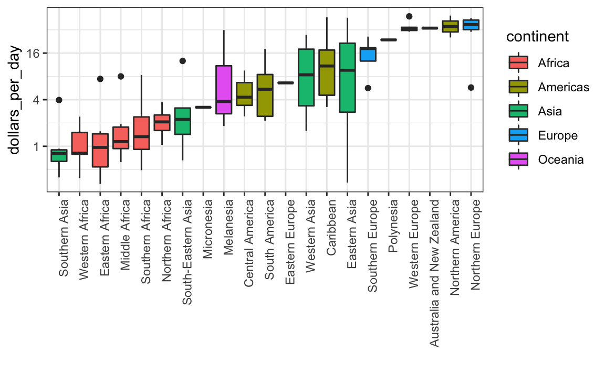
we are better able to see differences within the developing world.
Show the data
In many cases we do not show the data because it adds clutter to the plot and obfuscates the message. In the example above, we don’t have that many points so adding them actually lets us see all the data. We can add this layer using geom_point():
p + scale_y_continuous(trans = "log2") +
geom_point(show.legend = FALSE) 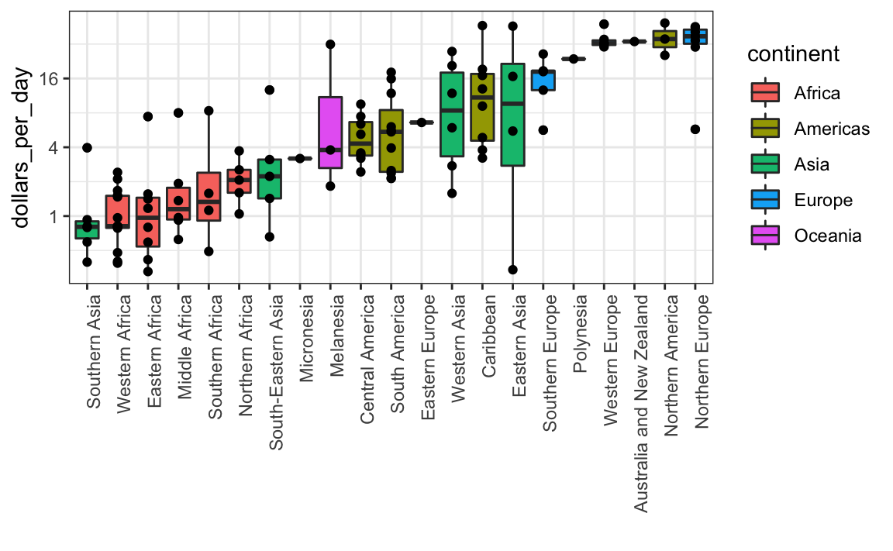
2.14.10 Comparing distributions
The exploratory data analysis above has revealed two characteristics about average income distribution in 1970. Using a histogram we found a bimodal distribution with the modes relating to poor and rich countries. Then by stratifying by region and examining boxplots, we found that the rich countries were mostly in Europe and Northern America, along with Australia and New Zealand. We define a vector with these regions:
west <- c("Western Europe",
"Northern Europe",
"Southern Europe",
"Northern America",
"Australia and New Zealand")Now we want to focus on comparing the differences in distributions across time.
We start by confirming that the bimodality observed in 1970 is explained by a “west versus developing world”" dichotomy. We do this by creating histograms for the previously identified groups. We create the two groups with an ifelse inside a mutate and then we use facet_grid to make a histogram for each group:
gapminder %>%
filter(year == past_year & !is.na(gdp)) %>%
mutate(group = ifelse(region%in%west, "West", "Developing")) %>%
ggplot(aes(dollars_per_day)) +
geom_histogram(binwidth = 1, color = "black") +
scale_x_continuous(trans = "log2") +
facet_grid(. ~ group)
Now we are ready to see if the separation is worse today than it was 40 years ago. We do this by faceting by both region and year:
past_year <- 1970
present_year <- 2010
gapminder %>%
filter(year %in% c(past_year, present_year) & !is.na(gdp)) %>%
mutate(group = ifelse(region%in%west, "West", "Developing")) %>%
ggplot(aes(dollars_per_day)) +
geom_histogram(binwidth = 1, color = "black") +
scale_x_continuous(trans = "log2") +
facet_grid(year ~ group)
Before we interpret the findings of this plot, we notice that there are more countries represented in the 2010 histograms than in 1970: the total counts are larger. One reason for this is that several countries were founded after 1970. For example, the Soviet Union divided into several countries including Russia and Ukraine during the 1990s. Another reason is that data was available for more countries in 2010.
We remake the plots using only countries with data available for both years. In the data wrangling chapter we will learn tidyverse tools that permit us to write efficient code for this, but here we can use simple code using the intersect function:
country_list_1 <- gapminder %>%
filter(year == past_year & !is.na(dollars_per_day)) %>%
.$country
country_list_2 <- gapminder %>%
filter(year == present_year & !is.na(dollars_per_day)) %>%
.$country
country_list <- intersect(country_list_1, country_list_2)These 108 account for 86 % of the world population, so this subset should be representative.
Let’s remake the plot but only for this subset by simply adding country %in% country_list to the filter function: 
We now see that while the rich countries have become a bit richer, percentage-wise, the poor countries appear to have improved more. In particular, we see that the proportion of developing countries earning more than $16 a day increases substantially.
To see which specific regions improved the most, we can remake the boxplots we made above but now adding the year 2010:
p <- gapminder %>%
filter(year %in% c(past_year, present_year) & country %in% country_list) %>%
ggplot() +
theme(axis.text.x = element_text(angle = 90, hjust = 1)) +
xlab("") +
scale_y_continuous(trans = "log2") and then using facet to compare the two years:
p + geom_boxplot(aes(region, dollars_per_day, fill = continent)) +
facet_grid(year~.)
Here, we pause to introduce another powerful ggplot2 feature. Because we want to compare each region before and after, it would be convenient to have the 1970 boxplot next to the 2010 boxplot for each region. In general, comparisons are easier when data are plotted next to each other.
So, instead of faceting, we keep the data from each year together and ask ggplot2 to color (or fill) them depending on the year. Note that groups are automatically separated by year and each pair of boxplots drawn next to each other. Finally, because year is a number, we turn it into a factor since ggplot2 automatically assigns a color to each category of a factor:
p + geom_boxplot(aes(region, dollars_per_day, fill = factor(year)))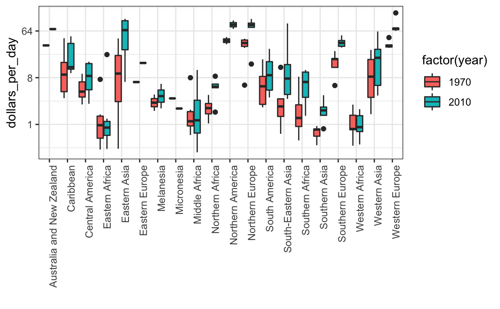
Finally, we point out that if what we are most interested is in comparing before and after values, it might make more sense to plot the ratios, or difference in the log scale. We are still not ready to learn to code this, but here is what the plot would look like:
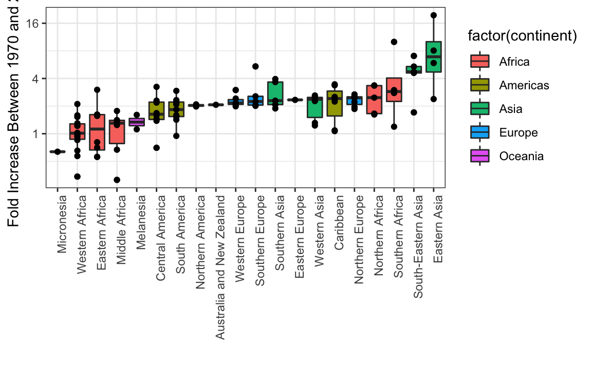
2.14.11 Density plots
We have used data exploration to discover that the income gap between rich and poor countries has narrowed considerably during the last 40 years. We used a series of histograms and boxplots to see this. Here we suggest a succinct way to convey this message with just one plot. We will use smooth density plots.
Let’s start by noting that density plots for income distribution in 1970 and 2010 deliver the message that the gap is closing:
gapminder %>%
filter(year %in% c(past_year, present_year) & country %in% country_list) %>%
ggplot(aes(dollars_per_day)) +
geom_density(fill = "grey") +
scale_x_continuous(trans = "log2") +
facet_grid(year~.)
In the 1970 plot we see two clear modes: poor and rich countries. In 2010 it appears that some of the poor countries have shifted towards the right, closing the gap.
The next message we need to covey is that the reason for this change in distribution is that poor countries became richer, rather than some rich countries becoming poorer. To do this we need to assign a color to the groups we identified during data exploration.
However, we first need to learn how to make these smooth densities in a way that preserves information on the number of countries in each group. To understand why we need this, note the discrepancy in the size of each group:
| group | n |
|---|---|
| Developing | 87 |
| West | 21 |
Yet when we overlay two densities, the default is to have the area represented by each distribution add up to 1 regardless of the size of each group:
gapminder %>%
filter(year %in% c(past_year, present_year) & country %in% country_list) %>%
mutate(group = ifelse(region %in% west, "West", "Developing")) %>%
ggplot(aes(dollars_per_day, fill = group)) +
scale_x_continuous(trans = "log2") +
geom_density(alpha = 0.2) +
facet_grid(year ~ .)
which make it appear as if there are the same number of countries in each group. To change this, we will need to learn to access computed variables with geom_density function.
2.14.12 Accessing computed variables
To have the areas of these densities be proportional to the size of the groups, we can simply multiply the y-axis values by the size of the group. From the geom_density help file we see that the functions compute a variable called count that does exactly this. We want this variable to be on the y-axis rather than the density.
In ggplot2 we access these variables by surrounding the name with two dots ... So we will use the following mapping:
aes(x = dollars_per_day, y = ..count..)We can now create the desired plot by simply changing the mapping in the previous code chunk:
p <- gapminder %>%
filter(year %in% c(past_year, present_year) & country %in% country_list) %>%
mutate(group = ifelse(region %in% west, "West", "Developing")) %>%
ggplot(aes(dollars_per_day, y = ..count.., fill = group)) +
scale_x_continuous(trans = "log2")
p + geom_density(alpha = 0.2) + facet_grid(year ~ .)
If we want the densities to be smoother, we use the bw argument. We tried a few and decided on 0.75:
p + geom_density(alpha = 0.2, bw = 0.75) + facet_grid(year ~ .)
This plot now shows what is happening very clearly. The developing world distribution is changing. A third mode appears consisting of the countries that most narrowed the gap.
2.14.13 ‘case_when’
We can actually make this figure somewhat more informative. From the exploratory data analysis we noticed that many of the countries that most improved were from Asia. We can easily alter the plot to show key regions separately.
We introduce the case_when function which is useful for defining groups. It currently does not have a data argument (this might change) so we need to access the components of our data table using the dot placeholder:
gapminder <- gapminder %>%
mutate(group = case_when(
.$region %in% west ~ "West",
.$region %in% c("Eastern Asia", "South-Eastern Asia") ~ "East Asia",
.$region %in% c("Caribbean", "Central America", "South America") ~ "Latin America",
.$continent == "Africa" & .$region != "Northern Africa" ~ "Sub-Saharan Africa",
TRUE ~ "Others"))We turn this group variable into a factor to control the order of the levels:
gapminder <- gapminder %>%
mutate(group = factor(group, levels = c("Others", "Latin America", "East Asia","Sub-Saharan Africa", "West")))We pick this particular order for a reason that becomes clear later.
Now we can now easily plot the densities for each region. We use color and size to clearly see the tops:
p <- gapminder %>%
filter(year %in% c(past_year, present_year) & country %in% country_list) %>%
ggplot(aes(dollars_per_day, y = ..count.., fill = group, color = group)) +
scale_x_continuous(trans = "log2")
p + geom_density(alpha = 0.2, bw = 0.75, size = 2) + facet_grid(year ~ .)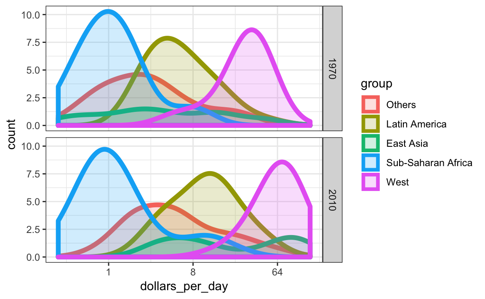
The plot is cluttered and somewhat hard to read. A clearer picture is sometimes achieved by stacking the densities on top of each other:
p + geom_density(alpha = 0.2, bw = 0.75, position = "stack") + facet_grid(year ~ .)
Here we can clearly see how the distributions for East Asia, Latin America and others shift markedly to the right. While Sub-Saharan Africa remains stagnant.
Notice that we order the levels of the group so that the West’s density are plotted first, then Sub-Saharan Africa. Having the two extremes plotted first allows us see the remaining bimodality better.
2.14.13.1 Weighted densities
As a final point, we note that these distributions weigh every country the same. So if most of the population is improving, but living in a very large country, such as China, we might not appreciate this. We can actually weight the smooth densities using the weight mapping argument. The plot then looks like this:

This particular figure shows very clearly how the income distribution gap is closing with most of the poor remaining in Sub-Saharan Africa.
2.15 Ecological fallacy
Throughout this section we have been comparing regions of the world. We have seen that, on average, some regions do better than others. In this section, we focus on describing the importance of variability within the groups when examining the relationship between a country’s infant mortality rates and average income.
We start by comparing these quantities across regions but before doing this we define a few more regions:
gapminder <- gapminder %>%
mutate(group = case_when(
.$region %in% west ~ "The West",
.$region %in% "Northern Africa" ~ "Northern Africa",
.$region %in% c("Eastern Asia", "South-Eastern Asia") ~ "East Asia",
.$region == "Southern Asia"~ "Southern Asia",
.$region %in% c("Central America", "South America", "Caribbean") ~ "Latin America",
.$continent == "Africa" & .$region != "Northern Africa" ~ "Sub-Saharan Africa",
.$region %in% c("Melanesia", "Micronesia", "Polynesia") ~ "Pacific Islands"))We then compute these quantities for each region:
surv_income <- gapminder %>%
filter(year %in% present_year & !is.na(gdp) & !is.na(infant_mortality) & !is.na(group)) %>%
group_by(group) %>%
summarize(income = sum(gdp)/sum(population)/365,
infant_survival_rate = 1-sum(infant_mortality/1000*population)/sum(population))
surv_income %>% arrange(income)
#> # A tibble: 7 x 3
#> group income infant_survival_rate
#> <chr> <dbl> <dbl>
#> 1 Sub-Saharan Africa 1.76 0.936
#> 2 Southern Asia 2.07 0.952
#> 3 Pacific Islands 2.70 0.956
#> 4 Northern Africa 4.94 0.970
#> 5 Latin America 13.24 0.983
#> 6 East Asia 13.44 0.985
#> # ... with 1 more rowsThis shows a dramatic difference. While in the West less than 0.5% of infants die, in Sub-Saharan Africa the rate is higher than 6%! The relationship between these two variables is almost perfectly linear:

In this plot we introduce the use of the limit argument which lets us change the range of the axes. We are making the range larger than the data requires because we will later compare this plot to one with more variability and we want the ranges to be the same. We also introduce the breaks argument which lets us set the location of the axes labels. Finally, we introduce a new transformation, the logistic transformation.
Logistic transformation
The logistic or logit transformation for a proportion or rate \(p\) is defined as:
\[f(p) = \log \left( \frac{p}{1-p} \right)\]
When \(p\) is a proportion or probability, the quantity that is being logged, \(p/(1-p)\) is called the odds. In this case \(p\) is the proportion of infants that survived. The odds tell us how many more infants are expected to survive than to die. The log transformation makes this symmetric. If the rates are the same, then the log odds is 0. Fold increases or decreases turn into positive and negative increments respectively.
This scale is useful when we want to highlight differences near 0 or 1. For survival rates this is important because a survival rate of 90% is unacceptable, while a survival of 99% is relatively good. We would much prefer a survival rate closer to 99.9%. We want our scale to highlight these difference and the logit does this. Note that 99.9/0.1 is about 10 times bigger than 99/1 which is about 10 times larger than 90/10. And by using the log these fold changes turn into constant increases.
Show the data
Now, back to our plot. Based on the plot above, do we conclude that a country with a low income is destined to have low survival rate? Do we conclude that all survival rates in Sub-Saharan Africa are all lower than in Southern Asia which in turn are lower than in the Pacific Islands, and so on?
Jumping to this conclusion based on a plot showing averages is referred to as the ecological fallacy. The almost perfect relationship between survival rates and income is only observed for the averages at the region level. Once we show all the data, we see a somewhat more complicated story:

Specifically, we see that there is a large amount of variability. We see that countries from the same regions can be quite different and that countries with the same income can have different survival rates. For example, while on average Sub-Saharan Africa had the worse health and economic outcomes, there is wide variability within that group. Mauritius and Botswana are doing better than Angola and Sierra Leone with Mauritius comparable to Western countries.
2.16 Some data visualization principles
We have already provided some rules to follow as we created plots for our examples. Here we aim to provide some general principles we can use as a guide for effective data visualization. Much of this section is based on a talk by Karl Broman titled “Creating effective figures and tables” including some of the figures which were made with code that Karl makes available on his GitHub repository, and class notes from Peter Aldhous’ Introduction to Data Visualization course. Following Karl’s approach, we show some examples of plot styles we should avoid, explain how to improve them, and use these as motivation for a list of principles. We compare and contrast plots that follow these principles to those that don’t.
The principles are mostly based on research related to how humans detect patterns and make visual comparisons. The preferred approaches are those that best fit the way our brains process visual information. When deciding on a visualization approach it is also important to keep our goal in mind. We may be comparing a viewable number of quantities, describing distribution for categories or numeric values, comparing the data from two groups, or describing the relationship between two variables. As a final note, we want to emphasize that for a data scientist it is important to adapt and optimize graphs to the audience. For example, an exploratory plot made for ourselves will be different than a chart intended to communicate a finding to a general audience.
We will be using these libraries:
library(tidyverse)
library(gridExtra)
library(dslabs)2.16.1 Encoding data using visual cues
We start by describing some principles for encoding data. There are several approaches at our disposal including position, aligned lengths, angles, area, brightness, and color hue.
To illustrate how some of these strategies compare, let’s suppose we want to report the results from two hypothetical polls regarding browser preference taken in 2000 and then 2015. Here, for each year, we are simply comparing four quantities – the four percentages. A widely used graphical representation of percentages, popularized by Microsoft Excel, is the pie chart:

Figure 2.10: Pie chart of browser usage.
Here we are representing quantities with both areas and angles since both the angle and area of each pie slice is proportional to the quantity it represents. This turns out to be a suboptimal choice since, as demonstrated by perception studies, humans are not good at precisely quantifying angles and are even worse when only area is the only available visual cue. The donut chart is an example of a plot that uses only area:

Figure 2.11: Pie chart of browser usage.
To see how hard it is to quantify angles and area, note that the rankings and all the percentages in the plots above changed from 2000 to 2015. Can you determine the actual percentages and rank the browsers’ popularity? Can you see how the percentages changed from 2000 to 2015? It is not easy to tell from the plot. In fact, the pie R function help file states that:
“Pie charts are a very bad way of displaying information. The eye is good at judging linear measures and bad at judging relative areas. A bar chart or dot chart is a preferable way of displaying this type of data.
In this case, simply showing the numbers is not only clearer, but would also save on printing costs if printing a paper copy.
| Browser | 2000 | 2015 |
|---|---|---|
| Opera | 3 | 2 |
| Safari | 21 | 22 |
| Firefox | 23 | 21 |
| Chrome | 26 | 29 |
| IE | 28 | 27 |
The preferred way to plot these quantities is to use length and position as visual cues since humans are much better at judging linear measures. The bar plot uses this approach by using bars of length proportional to the quantities of interest. By adding horizontal lines at strategically chosen values, in this case at every multiple of 10, we ease the visual burden of quantifying through the position of the top of the bars. Compare and contrast the information we can extract from the two figures.
Figure 2.12: Barplot of browser usage.
Notice how much easier it is to see the differences in the bar plot. In fact, we can now determine the actual percentages by following a horizontal line to the x-axis.
If for some reason you need to make a pie chart, label each pie slice with its respective percentage so viewers do not have to infer them from the angles or area:

In general, when displaying quantities, position and length are preferred over angles and/or area. Brightness and color are even harder to quantify than angles. But, as we will see later, they are sometimes useful when more than two dimensions must be displayed at once.
2.16.2 Know when to include 0
When using bar plots it is dishonest not to start the bars at 0. This is because, by using a bar plot, we are implying the length is proportional to the quantities being displayed. By avoiding 0, relatively small differences can be made to look much bigger than they actually are. This approach is often used by politicians or media organizations trying to exaggerate a difference. Below is an illustrative example:

(Source: Fox News, via Peter Aldhous via Media Matters via Fox News) via Media Matters.
From the plot above, it appears that apprehensions have almost tripled when, in fact, they have only increased by about 16%. Starting the graph at 0 illustrates this clearly:

Here is another example, described in detail: here.

which makes a 13% increase look like a five fold change. Here is the appropriate plot:
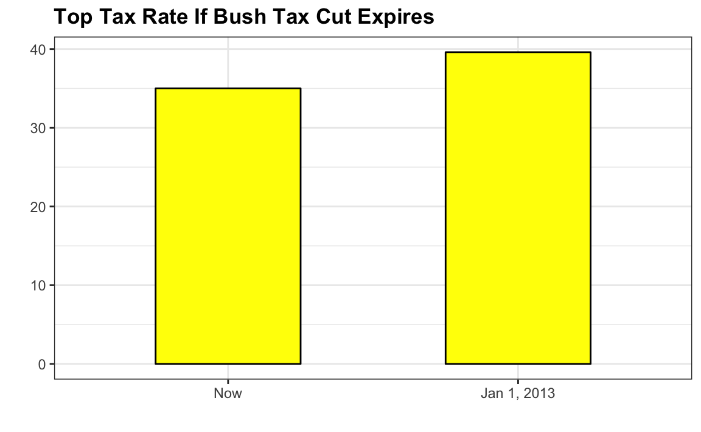
When using position rather than length, then it is not necessary to include 0. This is particularly the case when we want to compare differences between groups relative to the within the group variability. Here is an illustrative example showing country average life expectancy stratified across continents in 2012:
p1 <- gapminder %>% filter(year == 2012) %>%
ggplot(aes(continent, life_expectancy)) +
geom_point()
p2 <- p1 +
scale_y_continuous(limits = c(0, 84))
grid.arrange(p2, p1, ncol = 2)
Note that in the plot on the left, which includes 0, the space between 0 and 43 adds no information and makes it harder to compare the between and within group variability.
2.16.3 Do not distort quantities
During President Barack Obama’s 2011 State of the Union Address the following chart was used to compare the US GDP to the GDP of four competing nations:

Judging by the area of the circles, the US appears to have an economy over five times larger than China’s and over 30 times larger than France’s. However, if we look at the actual numbers, we see that this is not the case. The actual ratios are 2.6 and 5.8 times bigger than China and France respectively. The reason for this distortion is that the radius, rather than the area, was made to be proportional to the quantity. which implies that the proportion between the areas is squared: 2.6 turns into 6.5 and 5.8 turns into 34.1. Here is a comparison of the circles we get if we make the value proportional to the radius and to the area:

Not surprisingly, ggplot defaults to using area rather than radius. Of course, in this case, we really should not be using area at all since we can use position and length:

2.16.4 Order by a meaningful value
When one of the axes is used to show categories, as is done in bar plots, the default ggplot behavior is to order the categories alphabetically when they are defined by character strings. If they are defined by factors, they are ordered by the factor levels. We rarely want to use alphabetical order. Instead we should order by a meaningful quantity. In all the cases above, the bar plots where ordered by the values being displayed. The exception was the graph showing bar plots comparing browsers. In this case we kept the order the same across the bar plots to ease the comparison. Specifically instead of ordering the browsers separately in the two years, we ordered both years by the average value of 2000 and 2015.
We previously learned how to use the reorder function, which helps us achieve this goal. To appreciate how the right order can help convey a message, suppose we want to create a plot to compare the murder rate across states. We are particularly interested in the most dangerous and safest states. Note the difference when we order alphabetically (the default) versus when we order by the actual rate:
data(murders)
p1 <- murders %>% mutate(murder_rate = total / population * 100000) %>%
ggplot(aes(state, murder_rate)) +
geom_bar(stat="identity") +
coord_flip() +
xlab("")
p2 <- murders %>% mutate(murder_rate = total / population * 100000) %>%
mutate(state = reorder(state, murder_rate)) %>%
ggplot(aes(state, murder_rate)) +
geom_bar(stat="identity") +
coord_flip() +
xlab("")
grid.arrange(p1, p2, ncol = 2)
The reorder function lets us reorder groups as well. Earlier we saw an example related to income distributions across regions. Here are the two versions plotted against each other:

The first orders the regions alphabetically while the second orders them by the group’s median.
2.16.5 Show the data
We have focused on displaying single quantities across categories. We now shift our attention to displaying data, with a focus on comparing groups.
To motivate our first principle, ‘show the data’, we go back to our artificial example of describing heights to ET, an extraterrestrial. This time let’s assume ET is interested in the difference in heights between males and females. A commonly seen plot used for comparisons between groups, popularized by software such as Microsoft Excel, shows the average and standard errors (standard errors are defined in a later chapter, but do not confuse them with the standard deviation of the data). The plot looks like this:

The average of each group is represented by the top of each bar and the antennae extend out from the average to the average plus two standard errors. If all ET receives is this plot, he will have little information on what to expect if he meets a group of human males and females. The bars go to 0, does this mean there are tiny humans measuring less than one foot? Are all males taller than the tallest females? Is there a range of heights? ET can’t answer these questions since we have provided almost no information on the height distribution.
This brings us to our first principle: show the data. This simple ggplot2 code already generates a more informative plot than the bar plot by simply showing all the data points:
heights %>%
ggplot(aes(sex, height)) +
geom_point() 
For example, this plot gives us an idea of the range of the data. However, this plot has limitations as well since we can’t really see all the 238 and 812 points plotted for females and males respectively, and many points are plotted on top of each other. As we have previously described, visualizing the distribution is much more informative. But before doing this, we point out two ways we can improve a plot showing all the points.
The first is to add jitter, which adds a small random shift to each point. In this case adding horizontal jitter does not alter the interpretation, since the height of the points do not change, but we minimize the number of points that fall on top of each other and therefore get a better visual sense of how the data is distributed. A second improvement comes from using alpha blending: making the points somewhat transparent. The more points fall on top of each other, the darker the plot, which also helps us get a sense of how the points are distributed. Here is the same plot with jitter and alpha blending:
heights %>%
ggplot(aes(sex, height)) +
geom_jitter(width = 0.1, alpha = 0.2) 
Now we start getting a sense that, on average, males are taller than females. We also note dark horizontal bands of points, demonstrating that many report values that are rounded to the nearest integer.
2.16.6 Ease comparisons: use common axes
Since there are so many points, it is more effective to show distributions rather than individual points. We therefore show histograms for each group:

However, from this plot it is not immediately obvious that males are, on average, taller than females. We have to look carefully to notice that the x-axis has a higher range of values in the male histogram. An important principle here is to keep the axes the same when comparing data across to plots. Note how the comparison becomes easier:

2.16.7 Ease comparisons: align plots vertically to see horizontal changes and horizontally to see vertical changes
In these histograms, the visual cue related to decreases or increases in height are shifts to the left or right respectively: horizontal changes. Aligning the plots vertically helps us see this change when the axis are fixed:
p2 <- heights %>%
ggplot(aes(height, ..density..)) +
geom_histogram(binwidth = 1, color="black") +
facet_grid(sex~.)
p2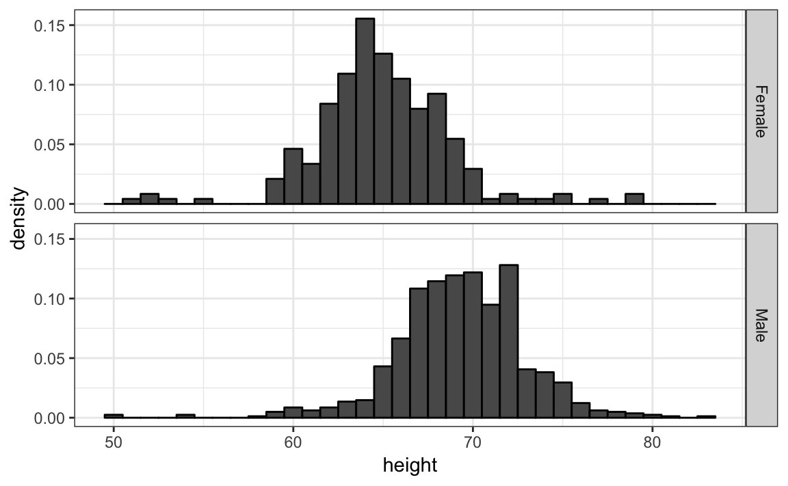
This plot makes it much easier to notice that men are, on average, taller.
If instead of histograms we want the more compact summary provided by box plots, then we align them horizontally since, by default, box plots move up and down with changes in height. Following our show the data principle we then overlay all the data points:
p3 <- heights %>%
ggplot(aes(sex, height)) +
geom_boxplot(coef=3) +
geom_jitter(width = 0.1, alpha = 0.2) +
ylab("Height in inches")
p3
Now contrast and compare these three plots, based on exactly the same data:
grid.arrange(p1, p2, p3, ncol = 3)
Notice how much more we learn from the two plots on the right. Bar plots are useful for showing one number, but not very useful when we want to describe distributions.
2.16.8 Consider transformations
We have motivated the use of the log transformation in cases were the changes are multiplicative. Population size was an example in which we found a log transformation to yield a more informative transformation.
The combination of an incorrectly chosen bar plot and a failure to use a log transformation when one is merited can be particularly distorting. As an example consider this bar plot showing the average population sizes for each continent in 2015:

From this plot one would conclude that countries in Asia are much more populous than in other continents. Following the show the data principle we quickly notice that this is due to two very large countries, which we assume are India and China:

Here, using a log transformation provides a much more informative plot. We compare the original bar plot to a box plot using the log scale transformation for the y-axis:

With the new plot we realize that countries in Africa actually have a larger median population size than those in Asia.
Other transformations you should consider are the logistic transformation, useful to better see fold changes in odds, and the square root transformation, useful for count data.
2.16.9 Ease comparisons: Visual cues to be compared should be adjacent.
When comparing income data across regions between 1970 and 2010 we made a figure similar to the one below. A difference is that here we look at continents instead of regions, but this is not relevant to the point we are making.

For each continent we want to compare the distributions from 1970 to 2010. The default in ggplot2 is to order labels alphabetically so the labels with 1970 come before the labels with 2010, making the comparisons challenging. But it is much easier to make the comparison when the box plots are next to each other:

2.16.10 Ease comparison: use color
The comparison becomes even easier to make if we use color to denote the two things we want to compare:

2.16.11 Think of the color blind
About 10% of the population is color blind. Unfortunately, the default colors used in ggplot are not optimal for this group. However, ggplot does it make it easy to change the color palette used in the plots. An example of how we can use a color blind friendly palette is described here:
color_blind_friendly_cols <- c("#999999", "#E69F00", "#56B4E9", "#009E73", "#F0E442", "#0072B2", "#D55E00", "#CC79A7")
p1 <- data.frame(x=1:8, y=1:8, col = as.character(1:8)) %>% ggplot(aes(x, y, color = col)) + geom_point(size=5)
p1 + scale_color_manual(values=color_blind_friendly_cols)
There are several resources that can help you select colors, for example this one.
2.16.12 Use scatter plots to examine the relationship between two variables
In every single instance in which we have examined the relationship between two variables, including total murders versus population size, life expectancy versus fertility rates, and infant mortality versus income, we have used scatter plots. This is the plot we generally recommend.
2.16.12.1 Slope charts
One exception where another type of plot may be more informative is when you are comparing variables of the same type but at different time points and for a relatively small number of comparisons. For example, comparing life expectancy between 2010 and 2015. In this case we might recommend a slope chart.
There is not geometry for slope charts in ggplot2 but we can construct one using geom_lines. We need to do some tinkering to add labels. Here is an example comparing 2010 to 2015 for large western countries:
west <- c("Western Europe","Northern Europe","Southern Europe",
"Northern America","Australia and New Zealand")
dat <- gapminder %>%
filter(year%in% c(2010, 2015) & region %in% west &
!is.na(life_expectancy) & population > 10^7)
dat %>%
mutate(location = ifelse(year == 2010, 1, 2),
location = ifelse(year == 2015 & country %in% c("United Kingdom","Portugal"), location+0.22, location),
hjust = ifelse(year == 2010, 1, 0)) %>%
mutate(year = as.factor(year)) %>%
ggplot(aes(year, life_expectancy, group = country)) +
geom_line(aes(color = country), show.legend = FALSE) +
geom_text(aes(x = location, label = country, hjust = hjust),
show.legend = FALSE) +
xlab("") + ylab("Life Expectancy")
An advantage of the slope chart is that it permits us to quickly get an idea of changes based on the slope of the lines. Although we are using angle as the visual cue, we also have position to determine the exact values. Comparing the improvements is a bit harder with a scatter plot:

In the scatter plot we have followed the principle use common axes since we are comparing these before and after. However, if we have many points, slope charts stop being useful as it becomes hard to see all the lines.
2.16.12.2 Bland-Altman plot
Since we are primarily interested in the difference, it makes sense to dedicate one of our axes to it. The Bland-Altman plot, also know as the Tukey mean-difference plot and the MA-plot, shows the difference versus the average:
library(ggrepel)
dat %>%
mutate(year = paste0("life_expectancy_", year)) %>%
select(country, year, life_expectancy) %>% spread(year, life_expectancy) %>%
mutate(average = (life_expectancy_2015 + life_expectancy_2010)/2,
difference = life_expectancy_2015 - life_expectancy_2010) %>%
ggplot(aes(average, difference, label = country)) +
geom_point() +
geom_text_repel() +
geom_abline(lty = 2) +
xlab("Average of 2010 and 2015") + ylab("Difference between 2015 and 2010")
Here, by simply looking at the y-axes, we quickly see which countries have shown the most improvement. We also get an idea of the overall value from the x-axis.
2.16.13 Encoding a third variable
An earlier scatter plot showed the relationship between infant survival and average income. The following is a version of this plot that encodes three variables: OPEC membership, region, and population

We encode categorical variables with color hue and shape. These shapes can be controlled with shape argument. Below are the shapes available for use in R. For the last five, the color goes inside.

For continuous variables we can use color, intensity or size. We now show an example of how we do this with a case study.
2.16.13.1 Case study: vaccines
Vaccines have helped save millions of lives. In the 19th century, before herd immunization was achieved through vaccination programs, deaths from infectious diseases, such as smallpox and polio, were common. However, today, despite all the scientific evidence for their importance, vaccination programs have become somewhat controversial.
The controversy started with a paper published in 1988 and lead by Andrew Wakefield claiming there was a link between the administration of the measles, mumps and rubella (MMR) vaccine, and the appearance of autism and bowel disease. Despite much scientific evidence contradicting this finding, sensationalist media reports and fear mongering from conspiracy theorists led parts of the public into believing that vaccines were harmful. As a result, many parents ceased to vaccinate their children. This dangerous practice can be potentially disastrous given that the Center for Disease Control (CDC) estimates that vaccinations will prevent more than 21 million hospitalizations and 732,000 deaths among children born in the last 20 years (see Benefits from Immunization during the Vaccines for Children Program Era — United States, 1994-2013, MMWR). The 1988 paper has since been retracted and Andrew Wakefield was eventually “struck off the UK medical register, with a statement identifying deliberate falsification in the research published in The Lancet, and was thereby barred from practicing medicine in the UK.” (source: Wikipedia). Yet misconceptions persist, in part due to self-proclaimed activists who continue to disseminate misinformation about vaccines.
Effective communication of data is a strong antidote to misinformation and fear mongering. Earlier we showed an example provided by a Wall Street Journal article showing data related to the impact of vaccines on battling infectious diseases. Here we reconstruct that example.
The data used for these plots were collected, organized and distributed by the Tycho Project. They include weekly reported counts data for seven diseases from 1928 to 2011, from all fifty states. We include the yearly totals in the dslabs package:
data(us_contagious_diseases)
str(us_contagious_diseases)
#> 'data.frame': 18870 obs. of 6 variables:
#> $ disease : Factor w/ 7 levels "Hepatitis A",..: 1 1 1 1 1 1 1 1 1 1 ...
#> $ state : Factor w/ 51 levels "Alabama","Alaska",..: 1 1 1 1 1 1 1 1 1 1 ...
#> $ year : num 1966 1967 1968 1969 1970 ...
#> $ weeks_reporting: int 50 49 52 49 51 51 45 45 45 46 ...
#> $ count : num 321 291 314 380 413 378 342 467 244 286 ...
#> $ population : num 3345787 3364130 3386068 3412450 3444165 ...We create a temporary object dat that stores only the measles data, includes a per 100,000 rate, orders states by average value of disease and removes Alaska and Hawaii since they only became states in the late 50s. Note that there is a weeks_reporting column that tells us how many weeks reported cases. So we have to adjust for that when computing the rate.
the_disease <- "Measles"
dat <- us_contagious_diseases %>%
filter(!state%in%c("Hawaii","Alaska") & disease == the_disease) %>%
mutate(rate = count / population * 10000 * 52 / weeks_reporting) %>%
mutate(state = reorder(state, rate)) We can now easily plot disease rates per year. Here are the measles data from California:
dat %>% filter(state == "California" & !is.na(rate)) %>%
ggplot(aes(year, rate)) +
geom_line() + ylab("Cases per 10,000") +
geom_vline(xintercept=1963, col = "blue")
We add a vertical line at 1963 since this is when the vaccine was introduced [Control, Centers for Disease; Prevention (2014). CDC health information for international travel 2014 the yellow book. p. 250. ISBN 9780199948505].
Now, can we show data for all states in one plot? We have three variables to show: year, state and rate. In the WSJ figure, they use the x-axis for year, the y-axis for state and color hue to represent rates. However, the color scale they use, which goes from yellow to blue to green to orange to red can be improved.
When choosing colors to quantify a numeric variable, we chose between two options sequential and diverging.
Sequential colors are suited for data that goes from high to low. High values are clearly distinguished from low values. Here are some examples offered by the package RColorBrewer
library(RColorBrewer)
display.brewer.all(type="seq")
Diverging colors are used to represent values that diverge from a center. We put equal emphasis on both ends of the data range: higher than the center and lower than the center. An example of when we would use a divergent pattern would be if we were to show height in standard deviations away from the average. Here are some examples of divergent patterns:
library(RColorBrewer)
display.brewer.all(type="div")
In our example we want to use a sequential palette since there is no meaningful center, just low and high rates.
We use the geometry geom_tile to tile the region with colors representing disease rates. We use a square root transformation to avoid having the really high counts dominate the plot. Notice that missing values are shown in grey. Once the disease was pretty much erradicated some states stopped reporting cases all together.
dat %>% ggplot(aes(year, state, fill = rate)) +
geom_tile(color = "grey50") +
scale_x_continuous(expand=c(0,0)) +
scale_fill_gradientn(colors = brewer.pal(9, "Reds"), trans = "sqrt") +
geom_vline(xintercept=1963, col = "blue") +
theme_minimal() + theme(panel.grid = element_blank()) +
ggtitle(the_disease) +
ylab("") +
xlab("")
This plot makes a very striking argument for the contribution of vaccines. However, one limitation of this plot is that it uses color to represent quantity which we earlier explained makes it harder to know exactly how high it is going. Position and lengths are better cues. If we are willing to lose state information, we can make a version of the plot that shows the values with position. We can also show the average for the US which we compute like this:
avg <- us_contagious_diseases %>%
filter(disease==the_disease) %>% group_by(year) %>%
summarize(us_rate = sum(count, na.rm=TRUE)/sum(population, na.rm=TRUE)*10000)Now to make the plot we simply use the geom_line geometry:
dat %>% ggplot() +
geom_line(aes(year, rate, group = state), color = "grey50",
show.legend = FALSE, alpha = 0.2, size = 1) +
geom_line(mapping = aes(year, us_rate), data = avg, size = 1, color = "black") +
scale_y_continuous(trans = "sqrt", breaks = c(5,25,125,300)) +
ggtitle("Cases per 10,000 by state") +
xlab("") +
ylab("") +
geom_text(data = data.frame(x=1955, y=50), mapping = aes(x, y, label="US average"), color="black") +
geom_vline(xintercept=1963, col = "blue")
#> Warning: Removed 180 rows containing missing values (geom_path).
In theory we could use color to represent the categorical value state, but it is hard to pick 50 distinct colors.
2.16.14 Avoid pseudo three dimensional plots
The figure below, taken from the scientific literature shows three variables: dose, drug type and survival. Although your screen/book page is flat and two dimensional, the plot tries to imitate three dimensions and assigned a dimension to each variable.

Humans are not good at seeing in three dimensions (which explains why it is hard to parallel park) and our limitation is even worse with regard to pseudo-three-dimensions. To see this, try to determine the values of the survival variable in the plot above. Can you tell when the purple ribbon intersects the red one? This is an example in which we can easily use color to represent the categorical variable instead of using a pseude-3D:

Figure 2.13: This plot demonstrates that using color is more than enough to distinguish the three lines.
Note how much easier it is to determine the survival values.
2.16.15 Avoid gratuitous three dimensional plots
Pseudo 3D is sometimes used completely gratuitously: plots are made to look 3D even when the 3rd dimension does not represent a quantity. This only adds confusion and makes it harder to relay your message. Here are two examples:


2.16.15.1 Avoid too many significant digits
By default, statistical software like R returns many significant digits. The default behavior in R is to show 7 significant digits. That many digits often adds no information, and the added the visual clutter can make it hard for the viewer to understand the message. As an example here are the per 10,000 disease rates for California across the five decades
| state | year | Measles | Pertussis | Polio |
|---|---|---|---|---|
| California | 1940 | 37.8826320 | 18.3397861 | 18.3397861 |
| California | 1950 | 13.9124205 | 4.7467350 | 4.7467350 |
| California | 1960 | 14.1386471 | 0.0000000 | 0.0000000 |
| California | 1970 | 0.9767889 | 0.0000000 | 0.0000000 |
| California | 1980 | 0.3743467 | 0.0515466 | 0.0515466 |
We are reporting precision up to 0.00001 cases per 10,000, a very small value in the context of the changes that are occurring across the dates. In this case 2 significant figures is more than enough and clearly makes the point that rates are decreasing:
| state | year | Measles | Pertussis | Polio |
|---|---|---|---|---|
| California | 1940 | 37.9 | 18.3 | 18.3 |
| California | 1950 | 13.9 | 4.7 | 4.7 |
| California | 1960 | 14.1 | 0.0 | 0.0 |
| California | 1970 | 1.0 | 0.0 | 0.0 |
| California | 1980 | 0.4 | 0.1 | 0.1 |
Useful ways to change the number of significant digits or to round numbers are signif and round. You can define the number of significant digits globally by setting options like this: options(digits = 3).
Another principle, related to displaying tables, is to place values being compared on columns rather than rows. Note that our table above is easier to read than this one:
| state | disease | 1940 | 1950 | 1960 | 1970 | 1980 |
|---|---|---|---|---|---|---|
| California | Measles | 37.9 | 13.9 | 14.1 | 1 | 0.4 |
| California | Pertussis | 18.3 | 4.7 | 0.0 | 0 | 0.1 |
| California | Polio | 18.3 | 4.7 | 0.0 | 0 | 0.1 |
| ### Know your | audience |
Graphs can be used for our 1) own exploratory data analysis, 2) to convey a message to experts, or 3) to help tell a story to a general audience. Make sure that the intended audience understands each element of the plot.
As a simple example, consider that for your own exploration, it may be more useful to log-transform data and then plot it. However, for a general audience that is unfamiliar with converting logged values back to the original measurements, using a log-scale for the axis will be much easier to digest.
2.16.16 Further reading:
- ER Tufte (1983) The visual display of quantitative information. Graphics Press.
- ER Tufte (1990) Envisioning information. Graphics Press.
- ER Tufte (1997) Visual explanations. Graphics Press.
- WS Cleveland (1993) Visualizing data. Hobart Press.
- WS Cleveland (1994) The elements of graphing data. CRC Press.
- A Gelman, C Pasarica, R Dodhia (2002) Let’s practice what we preach: Turning tables into graphs. The American Statistician 56:121-130.
- NB Robbins (2004) Creating more effective graphs. Wiley.
- Nature Methods columns
- A Cairo (2013) The Functional Art: An Introduction to Information Graphics and Visualization. New Riders
- N Yau (2013) Data Points: Visualization That Means Something. Wiley
Exercises
For these exercises we will be using the vaccines data in the dslabs package:
library(dslabs)
data(us_contagious_diseases)Pie charts are appropriate:
A. When we want to display percentages. B. When
ggplot2is not available. C. When I am in a bakery. D. Never. Barplots and tables are always better.What is the problem with the plot below:

A. The values are wrong. The final vote was 306 to 232. B. The axis does not start at 0. Judging by the length, it appears Trump received 3 times as many votes when in fact it was about 30% more. C. The colors should be the same. D. Percentages should be shown as a pie chart.
Take a look at the following two plots. They show the same information: 1928 rates of Measles across the 50 states.
 Which plot is easier to read if you are interested in determining which are the best and worst states in terms of rates and why?
Which plot is easier to read if you are interested in determining which are the best and worst states in terms of rates and why?A. They provide the same information so they are both equally as good. B. The plot on the right is better because it orders the states alphabetically. C. The plot on the right is better because alphabetical order has nothing to do with the disease and by ordering according to actual rate, we quickly see the states with most and least rates. D. Both plots should be a pie chart.
To make the plot on the left, we have to reorder the levels of the states’ variables.
dat <- us_contagious_diseases %>% filter(year == 1967 & disease=="Measles" & !is.na(population)) %>% mutate(rate = count / population * 10000 * 52 / weeks_reporting)Note what happens when we make a bar plot:
dat %>% ggplot(aes(state, rate)) + geom_bar(stat="identity") + coord_flip()
Define these objects:
state <- dat$state rate <- dat$count/dat$population*10000*52/dat$weeks_reportingRedefine the
stateobject so that the levels are re-ordered. Print the new objectstateand its levels so you can see that the vector is not re-ordered by the levels.Now with one line of code, define the
dattable as done above, but change the use mutate to create a rate variable and reorder state variable so that the levels are reordered by this variable. Then make a bar plot using the code above, but for this new dat.Say we are interested in comparing gun homicide rates across regions of the US. We see this plot:
library(dslabs) data("murders") murders %>% mutate(rate = total/population*100000) %>% group_by(region) %>% summarize(avg = mean(rate)) %>% mutate(region = factor(region)) %>% ggplot(aes(region, avg)) + geom_bar(stat="identity") + ylab("Murder Rate Average")
and decide to move to a state in the western region. What is the main problem with this interpretaion?
A. The categories are ordered alphabetically. B. The graph does not show standard errors. C. It does not show all the data. We do not see the variability within a region and it’s possible that the safest states are not in the West. D. The Northeast has the lowest average.
Answer C
Make a box plot of the murder rates.
data("murders") murders %>% mutate(rate = total/population*100000) #> state abb region population total rate #> 1 Alabama AL South 4779736 135 2.824 #> 2 Alaska AK West 710231 19 2.675 #> 3 Arizona AZ West 6392017 232 3.630 #> 4 Arkansas AR South 2915918 93 3.189 #> 5 California CA West 37253956 1257 3.374 #> 6 Colorado CO West 5029196 65 1.292 #> 7 Connecticut CT Northeast 3574097 97 2.714 #> 8 Delaware DE South 897934 38 4.232 #> 9 District of Columbia DC South 601723 99 16.453 #> 10 Florida FL South 19687653 669 3.398 #> 11 Georgia GA South 9920000 376 3.790 #> 12 Hawaii HI West 1360301 7 0.515 #> 13 Idaho ID West 1567582 12 0.766 #> 14 Illinois IL North Central 12830632 364 2.837 #> 15 Indiana IN North Central 6483802 142 2.190 #> 16 Iowa IA North Central 3046355 21 0.689 #> 17 Kansas KS North Central 2853118 63 2.208 #> 18 Kentucky KY South 4339367 116 2.673 #> 19 Louisiana LA South 4533372 351 7.743 #> 20 Maine ME Northeast 1328361 11 0.828 #> 21 Maryland MD South 5773552 293 5.075 #> 22 Massachusetts MA Northeast 6547629 118 1.802 #> 23 Michigan MI North Central 9883640 413 4.179 #> 24 Minnesota MN North Central 5303925 53 0.999 #> 25 Mississippi MS South 2967297 120 4.044 #> 26 Missouri MO North Central 5988927 321 5.360 #> 27 Montana MT West 989415 12 1.213 #> 28 Nebraska NE North Central 1826341 32 1.752 #> 29 Nevada NV West 2700551 84 3.110 #> 30 New Hampshire NH Northeast 1316470 5 0.380 #> 31 New Jersey NJ Northeast 8791894 246 2.798 #> 32 New Mexico NM West 2059179 67 3.254 #> 33 New York NY Northeast 19378102 517 2.668 #> 34 North Carolina NC South 9535483 286 2.999 #> 35 North Dakota ND North Central 672591 4 0.595 #> 36 Ohio OH North Central 11536504 310 2.687 #> 37 Oklahoma OK South 3751351 111 2.959 #> 38 Oregon OR West 3831074 36 0.940 #> 39 Pennsylvania PA Northeast 12702379 457 3.598 #> 40 Rhode Island RI Northeast 1052567 16 1.520 #> 41 South Carolina SC South 4625364 207 4.475 #> 42 South Dakota SD North Central 814180 8 0.983 #> 43 Tennessee TN South 6346105 219 3.451 #> 44 Texas TX South 25145561 805 3.201 #> 45 Utah UT West 2763885 22 0.796 #> 46 Vermont VT Northeast 625741 2 0.320 #> 47 Virginia VA South 8001024 250 3.125 #> 48 Washington WA West 6724540 93 1.383 #> 49 West Virginia WV South 1852994 27 1.457 #> 50 Wisconsin WI North Central 5686986 97 1.706 #> 51 Wyoming WY West 563626 5 0.887by region, showing all the points and ordering the regions by their median rate.
The plots below shows the for three continuous variables.

The line \(x=2\) appears to separate the points. But it is actually not the case, which we can see by plotting the data in a couple of two dimensinal points.


Why is this happening? A. Humans are not good at reading pseudo 3D plots. B. There must be an error in the code C. The colors confuse us. D. Scatter plots should not be used to compare two variables when we have access to 3.
Reproduce the image plot we previously made but for Smallpox. For this plot do not include years in which cases were not reported in 10 or more weeks
Now reproduce the time series plot we previously made, but this time following the instructions of the previous question.
For the state of California, make a time series plots showing rates for all diseases. Include only years with 10 or more weeks reporting. Use a different color for each disease.
Now do the same for the rates for the US. Hint: compute the US rate by using summarize: the total dividec by total population.